| 40歳世代の生き方: 40歳から45歳は人生の分水嶺 | |
| 中沢俊一 | |
| (2017) | |
まえがき
2017年度の新卒求人倍率が1.5倍で、バブル期並みだと言われています。その中でミドル世代に対する風当たりは相変らず冷たい。某大手企業の経営が「ミドル世代のリストラは、世代の若返りに必要な事だ」と言い放っています。
若い世代の活性化や活躍は必要ですが、ミドル世代の活躍は質が違う活躍が問われています。社会の、また、組織が期待する活躍出来ないミドルなら、淘汰されても仕方がないとも思っています。社会や組織を引っ張って行く世代が40歳～50歳代のミドル世代です。シニア／ミドル世代は、人生の中で最も充実した時期です。
孔子の言葉に「十有余にして学を志し・・・40にして起つ」があります。また、平均寿命が80歳を超えた国では、「40歳は人生の折り返し点」という言い方もあります。「35歳は、一度立ち止まって自分の生き様を見つめ直してみる秋である」という言葉もあります。35歳をマラソンに例えれば、35㎞地点は、勝負の地点です。トップに立てるか、脱落するかはこの地点にあります。40歳・50歳代になって「この仕事・この業務分野については他者に負けない」技能と自信を持っている人は、リストラなど気にしません。当該組織で評価されなければ、社外で活躍すべく飛び出していきます。40歳を過ぎても当該組織のルーチン業務しか出来ない人は淘汰されても仕方がありません。慌てて資格を取っても、特殊業務の資格なら別ですが、一般的な資格など役には立ちません。
40歳代～50歳代は、組織においては上級幹部や役員になって活躍する世代です。研究部門や技術部門で組織として手放したくない有能な人材価値の有る人、後輩社員に技能を伝授してもらいたい人材価値の有るミドル世代を除き、一般的能力しかないミドルは、世代の若返りを名目にリストラされるでしょう。少なくとも35歳時点での自己総点検と、点検結果に基づく40歳までの5年間、40歳～45歳の5年間の自己研鑽・自己磨きをしてこなかった結果です。
私自身34歳にして起ち、35余年後志が叶わず挫折した体験を持っています。ドキュメントマネジメントシステムインテグレーションの実務能力では他者に負けない自負が有りますが、経営者としての能力・資質が不足していた点を反省しています。私のささやかな体験も加味しながら、シニア／ミドル世代の生き方を考えてみたい。
中沢俊一
目次
第１章 シニア／ミドル世代を取り巻く環境
課長改革の動き
事例：ソニー
事例 ： Panasonic
事例：総務省
部下なし管理職は淘汰される
事例：アサヒビール
事例：ハイマールグループ
日本の伝統的企業の評価システム
管理職登用ルールが変わってきた
第2章 35歳は人生の分岐点
35歳転職の現状
シニア世代の中途採用が増えてきた
事例：三井化学
事例：アシックス
第3章 40歳代は人生の分水嶺
シニア／ミドル世代に求められるポータブルスキル
第４章 50歳代は熟年世代
50歳代の生き方
50歳代で見える限界
ジェネラリストは評価されない
５０歳代も会社に残ってもらいたい人材になる
役職定年後の生き方
転籍・出向
退職
転職・ヘッドハント
エグゼクティブ転職
事例：日経＆リクルートグループ「エグゼクティブ転職」
キャリアコンサルタントが国家資格に
転職してはいけない３つの特徴
シニアのためのハローワーク活用法
管理職にこだわって探す
ポストにこだわって探す
独立・フリーを目指したい
事例：青色LEDに挑戦した天才達
博士号を生かす米国 生かさない日本
日本の博士号取得者達は就職難
能力やスキルの陳腐化
特化した業務領域の人材は不要か
第5章 60歳定年後の生き方
高齢者雇用に対する産業界の対応
継続雇用制度に従って働く
継続雇用制度に対する企業の対応一例
事例 ： Panasonic
事例：富士電機
事例：川崎重工業
事例：カゴメ
事例 ： YKK
事例 ： IHI
シルバー人材センターで働く
事例：公民館の受付業務一例
ＮＰＯで働く
第６章 人材を無駄使いしていないか
非正規社員の中にも有能な人材がいる
外国人社員から見た日本企業の体質
なぜ自らを磨かないのか
第１章
シニア／ミドル世代を取り巻く環境
シニア／ミドル世代を取り巻く現状
「日本の企業から課長が消えていく」の記事を拝読し、思わず、「う～ん」とつぶやきました。 「 8 0 ％の社員は課長にさえなれない時代が到来」は、勤め人にとってはショックでしょう。入社して、まず目標にするのが「課長職」に就くことです。記事によると、ソニーの「年功給廃止」、パナソニックの「役割給導入」、日立の「グローバル人事統一」、など、大企業での人事改革により、「働かない中高齢者」「部下なし課長、部長」が淘汰され 、 8 0 ％が課長にさえなれない時代が来る」と書かれていました。
課長厳選時代でも課長になれる人のタイプとして、
① 管理職のポストが空いたとき。
② 公募に自から手を挙げて選考にパスする人。
③ あの人に課長をやらせてみようと真っ先に候補に挙がる人。
④ 3 3 歳前後を対象にしたマネージャー研修に声が掛かっている人。
が挙げられています。
この記事に賛否両論が巻き起こるかと思ったら、
① 管理職者が多すぎる。
② これまでが異常だった。
③ この流れが当然。
④ 肩書きは必要ない。
⑤ 課長にはなりたくない。
⑥ 現在の給与体系がおかしい。
と、賛成の声がほとんどを占めていた。回答した多く が 2 0 歳半ばか ら 4 0 歳前半を中心とするビジネスマンだった。後者の年齢は、課長の当事者とも重なる年齢層です。彼等はこの変化を「必然的なもの」と捉えている。寄せられたコメントをみて見ますと、
Ａ氏
このタイトルに経営者や研究者達が大きな関心を寄せたのは、従来の日本の雇用慣行のゆがみを反映している。役職はあくまでも役割であって、長い在籍者に対する功労賞ではない。
Ｂ氏
管理職４割が異常。日本の管理職が多いのは、残業代が付かない問題（ポストを与えて人件費削減〕もある。管理職とは名ばかりで、本質から外れている。
Ｃ氏
成長が止まった会社で新設のポストは出ない。停滞感の強い大手企業では、上に行けばいくほど人が辞めない。どんなに優秀でも、なかなか権限を持てない。課長になりたければ、ベンチャー企業に行けばいい。
など、現行の人事制度に対する反論が多い。
課長改革の動き
私が現役時代は、最後まで肩書き付きの名刺は作りませんでした。肩書が仕事をするのではないと思っていたからです。多くの企業で名刺交換をすると、課長、課長補佐、課長代理、専任課長、特命課長、部長、部長代理、部長補佐、次長、次長補佐、次長代理等々肩書だらけで、いささか辟易したものです。日本企業は肩書き社会で、麗々しく肩書きを示すことが、自分のステータスみたいに思っていることに可笑しさを覚えたものです。初めて会った人でも、10分間も話し合ってみると、人物の能力・力量等は分かるものです。実力のない者ほど、肩書にこだわります。課長改革の事例を紹介してみましょう。
事例：ソニー
ソニーが新たに導入したのが「ジョブグレード制度」。年功要素はなし。「現在果たしている役割 または 割り当てている役割」のみに基づいて社員を格付けし、給与もリンクさせる。社員の40％を超えていた管理職の半数が格下げされた。
現役課長にこれほど厳しい改革の必要性は何か。「ソニーはある時期まで自信満々に事業を行ってきた。2000年以降の事業環境の変化は、まったく予想外だった。今は、エンターティメントや金融部門が無ければ、潰れてもおかしくない危機的状況です。ソニーをゼロから作り直さなければならないのです」（新制度を設計した柴田剛・人事部門統括部長）
① 個人でプロフェッショナルとして貢献する社員のため、
・インディビジュアルコントリビユータ等級群
② チームを率いて管理職として貢献する社員のための、
・マネジメント等級群
を設けた。社員をこのいずれかに振り分けた。新入社員の時点では、全員がⅠに属するが，15～に上がる段階で、Ⅰ6かＭ6に分かれる。
等級と給与がリンクするため、飛び級すれば、給与も大きく変動するのが特徴だ。例えば，Ⅰ4からＭ6の統括課長に抜擢されると、月給が大幅にアップする。「人によっては、月額10万円程度上がります」（柴田氏）ジョブグレード制度の概要を、図1－1に紹介してみます。
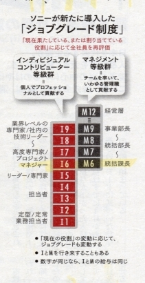
図1－1 ジョブグレード制度
（Weekly AERA 2015.7.13 引用）
管理職にならなければ給与が上がらないこれまでの制度は、技術能力の高いエンジニアには評判が悪かった。新制度では、16以上の上級専門職を目指す道が開かれた。Ⅰ6とＭ6の様に数字が同じならば処遇は同じ。ⅠとＭの行き来も可能。この制度で、管理職の半数がポストから格下げにされる厳しい側面がある。
昔のソニーの人員構成は、下が多く上が少ないピラミッド型だったが、今は逆ピラミッド型になっている。「成長期のピラミッド型に戻さなければならない」（柴田氏）ソニーの平均年齢は、43.2歳。今後は課長職以上のポストに就く人は厳選される。
事例：Panasonic
「新制度では、一般社員の職種を企画、技能、執務に3分類した。それぞれの3～4段階の等級を設定。管理職には8等級を設定。適用する7万人を査定し、管理職には14年秋から、一般社員には15年4月～導入した。業績が急回復し、再び成長へと舵を切ろうとする中で、組織を活性化するのが最大の目的」（千松哲也人事労政部部長）
「新制度では、現在のポストに安住することが許されない」「社内公募制度やフリーエージェント性を活用し、チャレンジする社員を評価する風土を根付かせたい」（千松氏）
従来は理事や参事、主事などの社内資格が変わらない限り、移動しても給与は変わらなかった。今度は、月5万円～10万円の変動がありうる。モチベーションが上がる人、下がる人は、半々でしょう。全体としてモチベーションをプラスに持っていくには、業績を伸ばし、全体のパイを増やす以外にない。
今回、同社が廃止していた部課長制を14年ぶりに復活させた。管理職の役割に「部下の育成」を再定義するためである。意思決定を迅速にするためには組織をフラット化したが、人材育成力が弱まったという反省がある。「部長・課長は、大きく舵を切って物事を替え、組織を活性化させるパーキンソンです。」（千松氏）
事例：総務省
以前のオフイス風景は、課長に最も近い場所から、課長補佐その隣に係長、入り口近くに平職員と並んでいた。15年1月、生産性向上などの理由にオフイスのレイアウトを変えた。
登庁すると、自分のロカーに行き鍵を開けてパソコンを取出し、好きな場所で仕事を始める。フロアでは、外部の協力企業も含めて、100人ほどが働いている。チーム毎に座るエリアは決まっているが、個人の座席は固定しないフリーアドレス制。個人デスクも撤廃した。電話は、それぞれの PHS にかかってくる。
「自分の周辺で職員が仕事をし、会話をしている職員の声が聞こえる。声が聞こえることが重要なのです」（橋本徹課長）
「わざわざ報告するほどでもないと遠慮した結果、問題が大きくなるリスクがある。会話か聞こえる距離にいたら、直ぐに修正が出来る。」（橋本課長）
袖机に入っていた多くの書類は破棄した。オフイス改善前には、フロアにコピー用紙 箱 60 0 個分の書類があった。そのうち の 8 0 ％に当た る 48 0 個分をシュレッダーで処理した。
パソコンで仕事をするようになって、紙書類を出力する必要が無くなった。資料を課内で確認する時もノートパソコンを持ち、画面上で確認してもらう。必要に応じて、その場で修正し、パソコン上で資料を完成させる。以前は、確認のためにプリントし、修正の指示を貰ったら、再度確認のためにプリントしていた。
テレワークも同時に推進した。一課長の決断が、霞が関の働き方に風穴をあけた。「様々な懸案があったが、思い切ってやってみることが大切だった」（加藤彰浩課長補佐）
部下なし管理職は淘汰される
担当課長、専任課長、部付部長等々「部下なし管理職」は、今後は降格され一般社員と同等になる恐れが多分にあります。多くの組織で「課長職を見直し」をおこなっています。給料についても、「仕事、役割」を重視していきます。
今までの日本企業では、能力や実績・年齢で給与を支払っていましたが、「役割給」は、この仕事はこれだけ重要で、これだけ負荷が有るから、××支払います」と将来に対して給料を払う考え方になって来ます。一つ一つのポストに値が付くため、基本的にはそこへ誰が座ろうと給料は同じ。
個別ポストの格付けは、例えば、
① 影響
組織全体のビジネス規模において、どれくらいの影響度があるか。
② 折衝
社内だけでの折衝か、外部とヒト、モノ、カネに関する交渉を必要とするのか。
③ 革新
個人としてイノベーションを起こす役割化、リソースを駆使してより大きな革新を起こすポジション化。
④ 知識
経営者として必要なレベル化、現場レベル化。
これ等のポイントを精査して評価します。（マーサージャパン中村健一郎紙）
マネジメントノウハウ、施行の挑戦度、行動の自由度、職務規模に対するインパクト等を尺度に、「仕事の値段」を測ります。
① 行動の自由度は、
単純作業化、標準化されたものか先例としてあるか、経営方針に基づくものかなどがポイント。
② 職務規模に対するインパクトは、
アウトプトの定量的な大きさを重視します。事業部長の場合は、売り上げで測る。
両者とも、これらの評価項目の配点は等分でない。現場レベルでは、「ノウハウ」を重視する一方、上位ポジションには、「説明責任」にウエートを重くする。さらに，各職務の市場価値を加味するケースもある。現在、給料体系を変更している大手企業では、このような「新課長の値段」を決めています。その会社にとって必要不可欠のスキル、あるいは、データサイエンステストなど、市場価値が高まっている職種は、高級になる傾向にあります。
「部下なし管理職」は、マネジメントをしていないと判断され、格付けランクが落ち、大幅に給料が下がる恐れがあります。もともと我国の会社にはジョブローテンションが有るため、部署が変わっても給料が減らないような仕組みがあります。また、労働者を保護するための法律もあります。しかし、昇格しなければ、給料は下がっていく。
「役割給」を導入した企業の多くは、専門職ですが、大した専門能力もない人が「専門職コース)入りを促される場合は、一般的に降格だといわれます。自分が今座っているポストが「いらない」と判断された場合、降格させられ、別のポストへ回されます。あるいは、ラインの管理職コース以外に、専門職コース入りを促される。その反面、専門職コースで評価され、昇格していく人もいます。
重要度や難易度が高い仕事をする人は優遇され、そうでない人は冷遇されるのは当たり前のことです。しかし、役割給導入で給料が上がると喜んでばかりはいられない事態もあります。政府は2015年4月に、「年収が1075万円以上」の高度な専門業務者に、労働時間でなく仕事の成果で賃金を決める「高度プロフェッショナル制度」の導入を含む労働基準法などの改正案を国会に提出した。今国会で成立すれば、2016年4月から施行されます。そうなると、平社員には極力残業をさせず（残業代が掛かるため）、管理職をより働かせるようになる。
幹部候補者は、課長になったあたりから見えてきます。最近では、さらに幹部候補者の選定を若返らせる傾向がみられ、係長クラスが早期に経営者教育を受ける「社内版ＭＢＡ」制度もあるという。役割給導入が、「社内格差」を拡大させる恐れもあります。
日本の企業では、欧米のようにジョブディスクリプション《職務ごとに求められる業務内容の記述》がありません。一人一人の業務範囲は不明瞭で権限も明確でなく、頑張る人ほど仕事が集中しやすい傾向にあります。各人が「生産性の高い仕事しているか否かを評価するシステム」もなく、頑張りの度合いで評価する傾向にあります。海外企業でもキャリアを目指す人材は、一般社員に比べ「成果を上げる」べく、猛烈に働いています。日本の管理職とは比べられない「質を伴った成果」です。政府が提案する「高度プロフェッショナル制度」の元で管理職になる人は、欧米企業のキャリアに伍した働き方が求められてくることが考えられます。非効率の頑張りや質の薄い長時間勤務ではない、「質を伴った成果」が厳しく求められてきます。
頑張るだけでは高評価されない
会社は、どのような点を評価しているかを参考までに紹介してみましょう。
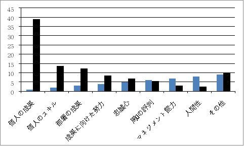
図1－2 貴方が重視している評価
（ THE 2 12015.0 4 号参照）
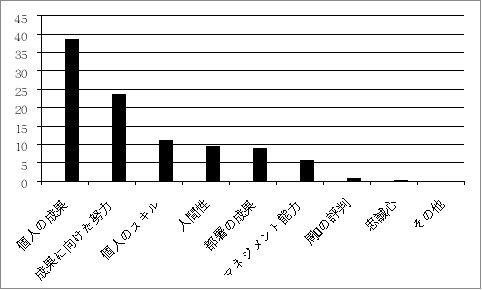
図1－3 会社が重視している評価
（ THE2 1 2015.0 4 参照）
① 「個人の成果」「個人のスキル」に対する評価は、
評価する側と評価される側両者とも 約 4 0 ％を占めています。
② 「成果に向けての努力」
評価をされている側は、「成果に向けての努力」を評価してもらいたい
が 23. 8 ％あるのに対し、評価する方は 、 8. 3 ％しかない。成果を出すべ
く努力をしているが、その努力が評価されないという不満の原因の一つ
にこの点がある。出た成果は評価するが、プロセス評価はしない。この
不満は、多くの企業でも聞きました。
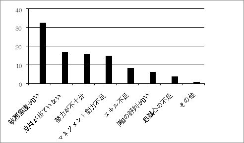
図1－4 企業側：低い評価ポイント
（ THE21 2015.04 参照）
企業人事部の評価で低い点が付けられる事項を見ますと、
③ 「人間性」
が挙げられています。仕事が出来ても 図1－4 で示した諸点に劣る人は
評価されません。
これもよく聞くことですが、「××は社内遊泳が上手いので部長になった」「××は上司に対しゴマすりが上手いので・・・」などなどです。人事部で「忠誠心」を評価したのは 、 0. 5 ％に過ぎません。会社中心、滅私奉公的姿勢は、本人が思っているほど会社側からは評価されていません。
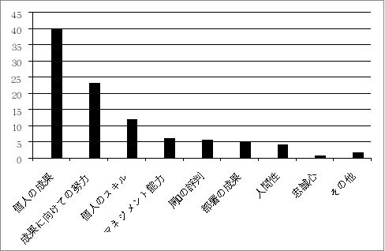
図1－5 貴方が納得する評価ポイント
（ THE21 2015,0 4 参照）
これからの時代に高い人事評価を受けるのは、「コミユニケーション能力」。
① 企業側の評価点
「コミユニケーション能力」
・対人スキル
・調整能力
・ 前例に捉われない発想と判断力。
・新しい業務や成果を生み出すスキル
・周囲を巻き込んで組織として成果を出す能力／
リーダーシップ。
・組織における原点回帰。
・バランスに優れた魅力的人望。
・協調性。
② 貴方の評価点
「コミユニケーション能力」
・専門スキル。
・やる気
・柔軟性／適応力
・対話能力
・交渉力。
・成果をアピールできる能力。
・ＰＲ能力。
・人間関係の構築。
・マネジメント／リーダーシップ。
・問題解決能力。
・全体を見渡す能力。
・部下を育てるスキル。
以上のような結果が出ています。
事例：アサヒビール
めまぐるしくビジネス環境が代わり、国境をまたいで競争が激化する中で、勝ち残っていくためには「どのような人材」が必要なのであろうか。益々グローバル化していく時代に、日本人が世界で通用する人材になるためには、
① 語学力／経営の知識／仕事以外の知識や教養
・グローバルにビジネスを行っていくうえで必要な基礎的な能力。
・日本人が世界の歴史や文化を語れる能力。幅広い知識と教養が無ければ、
海外での交渉は上手くいかない。
・相手国の歴史や文化について理解が有る事や趣味について語れる能力。
・日本の歴史や文化を語れる能力。
・最終的に取引が成立するか否かは、人間関係が築けるか否かにかかって
いる。
・ビジネス能力だけでなく、教養を身に着け、人間としての魅力を身に付
けることが必要。
同社はグローバルに活躍出来る人材を育成するために、「グローバル・チャレンジャーズ・プログラム」を実践していいます。入 社2～3 年目の社員を中心に、海外へ派遣している。意欲があれば、経験や実績が少なくとも問題が無いと言っている。ビジネスの現場で活躍するグローバルな人材になるには、実際の現場で経験を積むことが何よりも重要である。
プログラムを立ち上げた当初は、当社が進出していなかった国に半年 ～1 年間派遣し、生活をしながら「どのようにしたらこの国へ進出できるか」を考え、レポートを作成し報告してもらいます。これがきっかけに進出できた国もあります。出向している国で色々のことを肌で直接体験します。こうした厳しい環境に身を置くことで、変化の激しい時代に国際的に通用する人材が出来ると同社では考えています。
プログラムへの参加は公募ですので、意欲のある社員なら誰でも応募することが出来ます。意欲のある社員をどしどし伸ばす。チャンスをつかめるか否かは、社員自身の意思と力量次第です。自らチャンスをつかんでキャリアを掴み取っていく力を求めています。
キャリアを自ら切り開いて行くためにすべきこととしては、
① 入 社1 年目 ～3 年目（ジュニア世代）
・ルーチンワーク
決められた仕事は決められた通りに実行する。
・チームワーク
自分以外の人達と協力して仕事を成し遂げる。
② 入 社4 年 ～ 1 5 年（シニア世代）
・ヘッドワーク
徹底的に考え、手を動かし、口を動かす。
・ネットワーク
問題解決のために、社内外の情報や人脈のネットワークを持つことが欠
かせない。そのネットワークを築く。
・フットワーク
現場重視。現場に行って、そこで起こっていることを徹底的に把握し、
課題解決に取り組む。
③ 入 社 1 6 年目以降（ミドル世代）
・ライフワーク
家庭や趣味での活動に力を入れる。会社以外の現場を体験する。教養を
身に付けること。視野を広げ、人間的魅力の向上。
・シャドーワーク
担当以外の仕事の知識を勉学する。
自らの意思でキャリアを切り開いて行く意欲は、グローバル人材になるために必要。同社では、社員の自発性や積極性を重要視している。海外であろうと国内であろうと、
① 自分はどのような仕事をしたいのか。
② どの様なキャリアを積みたいのか。
③ 何を実現したいのか。
というキャリアビジョンを持っていなければ、評価されるような仕事は出来ない。一つの仕事を長年しているだけでは、ベテランでは通用しない。自分でキャリアビジョンを持ち、経験を積んでも常に新しい知識を吸収する努力を怠らない。どんなに役職が上がっても、現場に出て、肌で直接感じたことを重視する。そうした人が成長を続けられる。
事例：ハイアールグループ
「居心地の良い世界を、あえて抜け出せる人が評価される」。白物家電の販売台数 で6 年連続世 界1 のシエアを誇るハイアールグループ。同グループは、旧三洋電機（株）の白物家電部を引き継ぐ形で設立されました。
最初に着手したのは、責務の見直しです。山洋電機時代 に 1 4 あった職責の改装を、社長を含め て5 段階まで減らしました。それで何が変わったかというと、社員の「責任を所有する意識」です。階層が多い組織では、社員が新商品を上に提案しても、各階層で意見が出て来る。上層部全員から了解を取っているうちに、結局、何処にでもある商品になってしまいます。
しかも、そのような結果になった責任を誰も取らない。決定に係る人を最小限に絞り、責任の所在を明確にした。「評価する人材」は、責任を所有する意識が有ることが、まず、第一の条件です。責任を所有する意識のある人は、「自分の人生は自分で決める」姿勢を持っている。例えば、
① 3 年後にはこんな仕事をしていたい。
② そのために必要なスキルを身に付けよう。
③ 自分の業界のみならず、同業種以外の情報にも触れ、感度の高い人間になるよう努力する。
と考え、自ら切磋琢磨する。そのような人なら、経験が無くとも、重要なポジションを任せたい。他人が当たり前にやっていることが出来ない人は、何処の組織でも必要とされません。
「前例がない仕事をやらない人は評価しない」同じ場所 で3 年も過ごすと、その分野のことは大体わかってくる。仕事が楽になる。仕事が楽だと感じた瞬間、その人の進歩は止まる。（以上、伊藤義明社長）
日本の伝統的企業の評価システム
日本の伝統的企業では、能力やスキルに評価の重点を置いていないところが多い。欧米企業では、仕事の内容とそれを行う社員が、「契約」によって入社します。当該仕事をやらせるのにふさわしい能力やスキルを持っているか否かを判断して採用します。要求される能力や技能が不足していると解雇の対象になります。
例えば、欧米のビジネスマンに日本の新卒一括採用について説明すると、「まだ働いてもいない学生をなぜ採用するのか」という反論があると聞きます。どれくらい業務能力が有るのか分からない学生と雇用契約を結ぶのは、考えられないと言う。欧米人の雇用形態から見ると、不思議がるのも理解出来ます。
日本の伝統的企業では、欧米企業と異なり、「能力やスキルを磨けば昇進・昇格する」とはいえません。上下との関係がポイントになるので、評価されるための条件は、上司が自分に対して求めている業務水準を常に上回ることを意識しなければなりません。日本の組織内では、あまり能力の差異に注目しません。総合職や基幹職であれば、みんなが上のポストを目指します。出世意識が強いのが日本の特徴です。欧米の企業では、専門職的に仕事に取り組む人達が中心です。
大手企業では、早いところで は 3 5 歳くらいから管理職登用が始まります 。 4 0 歳が平均的登用年齢です。この時点で評価・選抜を得られなかった社員が、再評価されるケースは少ない。自分は出世できないとわかったら、自分に向いた仕事を積極的に探すのも一つの生き方でしょう。例えば、人に会うことが好きなら、営業部門を希望する。あるいは、出向などで新たな自分を発見するなど、生き方を考える。ウジウジしているのが一番悪い。
管理職登用ルールが変わってきた
現在でも大手企業や行政機関で、決済を貰うまで多くの捺印を押してある書類を見ます。欧米組織に比べ決済までの時間が掛かり、これも日本企業等の業務の迅速性、生産性・効率性を阻害している要因の一つです。
物流関連では中間業者を排除し、生産者と消費者間の経路を短縮する動きが活発化しています。組織においても、作成者と決裁者の間を省略し、捺印 は2 個あれば十分でしょう。今後の我国の組織では 、 8 0 ％の社員が管理職になれないのも、この時代の流れから見て当然です。
日本型雇用は欧米型雇用と異なり、「ポスト制」ではないため、欧米型雇用に全面的に切り替わることは難しいでしょう。欧米型雇用では、個人は会社と「このポストで、この業務をすると言う契約を結びます。いわゆる「ポスト制」です。欧米の会社では、社員をそのポストから簡単に移動させることが出来ず、日本の様に、移動や転勤、同職同地域での移動も難しい。
日本型雇用では、簡単な仕事から順次難易度を挙げながら能力を伸ばし、昇給・昇進していくやり方を採っています。このため、ポストが無くとも「課長級」「部長級」などの等級を与え、等級に相当した給与を支払っています。このやり方では、組織にとって大きな負担となり問題化して来ています。そこで近年増えているのが、「管理職以上についてだけポスト制」を採り入れる会社です。上述したソニー や Panasoni c が着手した方法が、その一例です。
これまでは、低評価でも年次で昇進させていたのを、今後は止めると言うだけです。「評価が平均より低い、周囲より昇級が遅い」と気付いたら、一日も早く仕事のやり方を改善し、評価のアップを図るように努力します。現実には、低評価の人ほど、この意識が低いといわれます。
一般的な日本型雇用では、最初は小さな仕事から経験を積み専門性を高めていき、その後大きな仕事を任せられるようになります。成果を上げ高評価に繋がっていきます。しかし、子飼いで育てられた業務レベルの高い人ほど、他業界や他職種では役に立たないというケースがあります。当該組織の中だけのプロフェショナになるか、社外にも通用するプロフェッショナになるかは、各人の生き方です。
第2章
35歳は人生の分岐点
35歳は人生の分岐点
入 社3 年もすれば仕事にも慣れ、自分の適職も分かって来る年代です 。 3 0 歳前後になると、幹部社員候補生としての選考が行われます。入社時は横一線のスタートラインからスタートします。この時点で差が出始めます。
中高生時代から、漠然とながらも自分の行く道を定め、大学の学部を選び、会社を選びます。生涯サラリーマンとして生きればよいと思っている者 と 3 0 歳までには起業しようと考えている者とは、スタートラインに立った時点から業務に対する心構えが違います。後者の人物は、ルーチン業務をしながら、自分にとってコアになる職種を必死になって磨いています。
入 社3 年目、企業の大小にかかわら ず 2 0 ％強が退職していくのもこの時期です。企業人生では 、 2 5 歳を起点に 「5 年刻み」で自己の業務能力、スキルの程度等を評価・分析します 。 3 0 歳になれば、幹部候補者を少し絞り込んで選考されます。、中には課長クラスに抜擢される人も出てきます。
また 、 3 0 歳前後の間で、起業を志していた人達の多くが独立して行きます。
2 5 歳から 「5 年おきに自己評価・スキル分析」を行い努力してきた人が 、 3 5 歳になり自分の置かれている現状を熟視し、満足する評価がなされていれば、次 の 4 0 歳代に挑戦します。社内でしか通用しない業務能力やスキルでなく、社外でも通用する実務能力（例：パラレルスキル）を持っていると客観的な評価をした人達の中から、ヘッドハントを受けたり、自らエグゼクティブ人材登録を行う動きが出てきています。また、現在の実務能力が有れば社外で通用するだろうと考え転職を考える人もいるでしょう 。 3 5 歳だと課長経験者も多いと考えられます。
3 5 歳代での選抜評価は、当該組織の幹部社員としての重要な選抜選考です。この選考で残れなかった人達は 、 4 0 歳代 ・ 5 0 歳代でのポジションが期待出来ません。少数ながら 、 3 5 歳 ～ 4 0 歳まで の5 年間のキャリア磨き、実務磨きの結果が高評価されれれば、上級幹部へ登用される人もいると思います。サラリーマン生活では 、 3 5 歳は自分の業務能力・スキル等をを厳しく自己評価する「重要時期」と考えます 。 3 5 歳 ～ 4 0 歳まで の5 年間の生き様が 、 4 0 歳 ・ 5 0 歳の生き方に大きく影響して来ます。転職をするにしても、 「 3 5 歳の壁」と言われるのが現状です。
転職を考える
3 5 歳で自己評価を厳しく行い、当該組織内でどのような生き方をするかは、企業毎に体質が異なり、各人各様です。自分の生き方は他人から指導されるのではなく、自ら模索しながら挑戦していくものです。ここでは、思い切って転職し、新天地で思い切って働く場合を考えてみましょう。一言でいって、「転職も大変」です。転職の仕方を大別すると、
① ヘッドハントされて転職。
② 自ら職を探して転職。
があります。前者は、プロのヘッドハンティング会社が当人の能力等を専門的に調べ、評価してヘッドハントをしてきます。後者は、自ら自分の能力を売り込まなければなりません。転職といっても内実が違います。
35歳転職の現状
転職者数が2016年、7年ぶりに300万人の大台を回復した。人手不足やグローバル化の中で、中高年者の管理職達の転職も増えています。総務省が2017年2月17日に発表した2016年度の労働力調査では、転職者数が2015年度より8万人増えて306万人となっています。
転職者数に占める35歳以下の割合は、ここ10年低下が続いています。45歳～54歳の転職者は50万人で、2002年以降最多になっています。これは、背景にベテラン管理職のニーズの高まりがあると思われます。41歳以上の転職者数は、2015年同期比で27.4%増。世代別では、25歳以下に次いで高い伸びを示しています。2017年度の中途採用求人数は、2016年度に比べ23.4％多い約16万件で、26か月連続で過去最高を更新しています。特に、電気・機械の技術者が、35％増。規格・管理が27.9％増になっています。
35歳を超えた中高年者の需要は確かに高まっていますが、求人倍率としてはまだ低いのが現状です。確かに、これまでも需要が高かったのが「ＩＴや電機・機械・建築関連の技術者／スペシャリスト」達です。
35歳以上の転職では、業界や業種、あるいは、現在の年収・役職・ポジションなどに加えて、年齢・過去の転職回数・地域間のギャップなども、実際の転職の難易度に大きく影響します。
DODAエージェントサービスの調査によりますと、2016年上半期の転職者の平均年齢は、32.3歳。男女別比較では、男性：32.9歳、女性：29.7歳となり、男女とも過去最高値を更新しています。業種別で見ますと、
① 事務系・アシスタント系：29.7歳
② 専門職系： 33.8％
③ 技術系（ＩＴ／通信）：32.6歳
④ 技術系（建築・土木）：36.8歳
⑤ 販売・サービス系： 30.0歳
などです。ここ3年ほど平均年齢は、36歳～37歳と高い水準を維持しています。
転職成功者の内訳を見ますと、最も割合が高いのが「25歳～29歳」：37.2％。次いで「30歳～34歳」：25.7％、「40歳以上」：15.1％と続いています。特に、近年は35歳以上のシニア世代の人材に対する企業の採用意欲が高まっています。
職種別での年齢の割合をみて見ますと、
① 20歳代 ： 事務・アシスタント系
販売・サービス・営業系
② 35歳以上： 技術系（建築・土木系）
③ 35歳以上： 技術系（電機・機械）（企画・管理系）
技術系 (IT/通信)
専門系
35歳以上の求人は、新たな製品開発やＩＴ／自動化といった先端の技術を活用する企業に多く、高度な技術や専門的なスキルを持つ技術系の人材に関心があります。また、ビジネスの成長を見据えた経営視点からプロジェクトをまとめ、一歩踏み込んだ提案や課題解決に取り組める即戦力になる人材が求められています。社外の企業が求めている人材傾向を見ますと、35歳以上の人に求められるのは、技術系や専門系の人材です。30歳を過ぎたら転職の可否は別にしても、
① 自分が仕事に求める「中核業務」は何か。
② 自分の得意な分野や専門領域・強みは何か。
を改めて見つめ直してみることです。漫然と日々の業務をしている人達と比べ、自問自答しながら日々自分を磨いている人は、35歳から40歳までの5年間の努力が、必ず報われると思います。社内で報われないならば、例えば、「日経エグゼクティブ転職」「リクルートエグゼクティブ転職」などに登録して置くのも一つの方法です。ハローワークなどに最初から行くものではありません。
エグゼクティブとして社外に通用する人達は別にして、ガラパゴス型一般的技能や業務スキルしかない35歳以上の人達に対する求人は、減少しています。入社時点では、当該企業から人材価値が有ると認められて入社したはずです。35歳になり自分の社内評価が思っているより低く、40歳以降に対し不安と不満があり転職を考えている人達がいます。転職するについて「安定性の高い会社に転職したい」と思うのも分かります。
転職希望先企業として、
① 企業規模の大きいところ。
② 上場企業であること。
③ 知名度が高い企業。
が挙げられます。これ等の企業では社内の競争が激しく、競争に敗れた人達が出向や転籍などで淘汰されています。この様な企業に平均的な技能や業務スキルしかない人が挑戦しても敗退するのが当然です。大企業に在籍して居ながら35歳前後になって転職したいと思う人は、大手企業の内実を十分認識しているはずです。貴方自身が自分の能力、スキルを自己分析してみることです。貴方が経営者の立場なら、現在の貴方を中途採用しますか。
2017年度の新卒者の求人倍率は、1.48倍と売り手市場になっていますが、35歳からの転職は厳しい状態です。転職したいと思う場合は、一度冷静になって、「なぜ転職したいのか」を塾考することです。熟考に熟考を重ねた後、退職を決断したら、自分の能力をよく見極め、高望みをしない事です。
シニア世代の中途採用が増加してきた
2016年になると、事業のグローバル化や構造改革に伴い、30歳から40歳代を中心にしたシニア／ミドル世代の中途採用の動きが広がって来ました。高いマネジメント能力や技術を持つミドル世代を即戦力として重視し始めました。
事例：三井化学
2016年度中に、理系の人材を中心に50人を中途採用する方針です。2015年度までの採用実績に比べて約2倍に増やす。50歳代の人材も初めて採用しています。。2017年度には、60人以上の中途採用者を予定していいます。
同社は新規事業の拡大もあって、異業種で経験を積んだ人材の重要性が高まっている。「社内のノウハウ不足を中途採用で補っている」（伸沢啓太採用チームリーダー）
事例：アシックス
同社は、2013年度から管理職の中途採用を本格化した。海外事業の急拡大で管理職を任せられる人材の育成が追い付けないことが背景にある。2020年の東京五輪に向けてアパレル分野では、2016年に5人の部長職を採用するなど、中途採用の人材が、全体の過半数を占めるようになって来た。
同社の海外売上高は、売上高の70％を占めている。様々な国籍の社員を管理し、海外の取引先とコミユニケーションを取れる社員を数多く確保するため、社外にも人材を求めた。「社内に新しい風を吹き込んでほしい」と企業文化への好影響も期待している。
海外進出や海外に販路を拡大しようとする企業では、海外に拠点を置き責任者として経営全般を任せる人材が不足している所が多い。海外と一口に言っても、国によって文化、各種制度、商取引方法の違いなど、様々な違いが有ります。社外の人間で海外勤務経験者なら、海外での業務の進め方等を熟知していいる人達が多くいます。エグゼクティブ転職エージェントに登録している人の中に中途採用したい人物がいたら、エージェントを仲介にした中途採用の交渉をしますし、当人が万一の場合のの保険として登録しているだけなら、エグゼクティブエージェントに依頼してスカウト交渉をさせるでしょう。
部長職以上の処遇で中途採用する人材には、特定の業務だけの専門家でなく、幅の広いスキル「ポータブルルスキル」を持った人が求められます。在職中でも30歳になり上昇意欲のある人は、実務だけでなく組織運営・経営者の視点に立った実務のやり方等を加味した業務の在り方に挑戦すべきでしょう。この努力が40歳になってからの最終幹部候補者選抜評価にも繋がって来ます。
第3章
40歳代は人生の
分水嶺
自分の市場価値を意識する自己研鑽
大企業での出世はますます大変。50歳前後までに、少なくとも執行役員以上になっていなければ55歳になると役職定年になり、よほどのことが無い限り企業内における出世競争は終わりです。
大手企業人事担当者の中には、
① 社内にはだぶついた社員達がいる。これら社員達に能力を伸ばすキャリ
ア教育をすると、それに見合ったポストが必要になる。
② 現在でも不用ポストが多くあるのに、これ以上ポストを増やすことは出
来ない。
③ ポストが足りないから、社員教育はしなくともよい。
と考えている担当者が少なからずいると聞く。大企業では、出世が出来なければ飼い殺しになると言う。耳を疑いたくなるような言葉です。
大企業では、よほどの失敗が無ければ入社から26年で役員になり、年収も2000万円が実現可能だとの話を聞きますが、これは一部の大企業の中の一部の社員にのみあてはまる話です。入社世代によっては大量採用により、その世代が社内でだぶついています。以前なら部課長になれた年齢になっても、現在ではミドルになっても平社員が多々います。年功序列制度が薄れてきた日本の雇用制度が進んで来れば来るほど、この傾向が強くなって来ます。
先述したように、大手企業や大手組織では、やたらと意味不明の役職名が多すぎるのも、中身のない役職を与えて不満が出ないようにしているとしか思えない。本書でも強調しているように、会社人間で終わりたくないと思い「自己研鑽をして自分磨きをやろう」と努力しても、在職企業で歓迎されない場合もあるでしょう。上述した先達の実例を見てもお分かりいただけたでしょう。
大企業の中には、ビジネススクールに入り自分磨きをすることに消極的な企業もある。日本企業社会の中には「出る杭は叩かれる」傾向が有りますが、韓国社会をみて見ると、我国とは反対に「出ない杭は潰される」と言われています。成長中の企業や外資系企業、ＩＴ，ベンチャー企業では、自己磨きが奨励されていますが、伝統を重んじる我国の大手企業では、疎まれている。
若いうちからチャレンジ精神を持ち、目的意識と人生設計を描き大手企業に入社し、日常業務を真剣に実行しながら、目的に向かって行動するには社外で通用する実務経験とスキムも体得しなければならないと努力している人達にとっては、社内における肩書などにそれほど執着しません。在籍企業に定年まで働き、あるいは、定年後65歳まで継続雇用で働ければで幸いだと思う人達と、入社時点から目的意識と人生設計を描いて日々業務に挑戦している人とでは、生き方が違います。
近年、本文でも記しているように、今すぐに転職するる気はないが、転職サービスや転職エージェントに登録して置き、窓口相談を受け自己研鑽の不備な点、研鑽の方向性の修正など、専門スタフのアドバイスを受けながらキャリアアップを図り、現在の自分の業務能力やスキルが、社外でどの程度通用するかをチェックする人が増えて来ているようです。
自分の現在の「市場価値」を知る事により、一段と励みになります、自分磨きにも緊張感が増します。社外の世界に接していれば人との縁も広がり、人間性も磨かれて来ます。在職企業内では部課長として管理職を勤めているが、社外には自分程度や自分以上の人材が多々いることが実感出来るはずです。この自覚が大きな励みにもつながって来ます。社外でのスキル磨きが「出る杭として在籍企業内でにらまれるならば」、黙って努力し続ければよい事です。他者のためにやるのではなく、自分のために行っているからです。自分が行っていることを社内で吹聴する必要もありません。「市場価値が低いまま会社人間で終わりたくない」と常々思い努力することは、好ましい行為です。
40歳、50歳になって「追い出し部屋」に配属され、恥辱を味わいながら会社人間を続ける人もいるでしょう。社外に飛び出しても現状と同じ程度の収入を確保できる自信が無い人なら、家族を養うために最後まで会社にしがみついているのも一つの人生です。若い時から人生設計を描き、必死になって目的とした業務を深め、社外へ飛び出し人生へ挑戦するのも一つの生き方です。会社内でのことしか念頭にない人と、広い社外へ目を向けた人達の生き方は違います。
内向性の人が社外へ飛び出せば、確実に打ちのめされます。外向性の人が飛び出すチャンスを逸して会社に停まっていたら、確実に潰されるか、腐ってしまいます。どの様に行動するかは、貴方の能力と決断次第です。
40歳からはポータブルスキルが問われる
改正高年齢者雇用安定法が施行され、60歳定年後当人が継続雇用制度の下で継続して当該企業で働きたいと望む場合、企業は65歳まで継続雇用をしなければならないと法律で義務付けられました。当法律の経過措置期間が終わる2025年までには、「65歳定年制」が実現するといわれています。
世界の先進国では高年齢化が進んでおり、これに伴い公的年金受給年齢は引き上げられており、ドイツでは67歳から、オーストラリアでは70歳からが現実化しています。我国では65歳からの支給ですが、67歳からの支給、いや、70歳からの支給などの検討も行われています。現在の我が国の年金制度では、75歳からの支給が入出のバランスが取れるとも言われています。
政府の１億総活躍時代のスローガンの中に、「70歳まで働ける社会環境作り」が挙げられています。70歳まで働くとするならば、大学を卒業して入社後、47年間も働き続けなければなりません。入社後、同一企業で47年間も働き続ける人ことは、大変な事です。転職を前提にしたスキル磨きと共に、在職企業で生き残るためのスキル磨きが、厳しく問われて来ます。
現在は、ミドル世代がリストラ対象になっていますが、65歳定年制、70歳定年制時代においては、40歳代～50歳代は組織の中核人材です。在職組織内でしか通用しないスキルやジェネラリストでは，組織内での出世どころか生き残るのも大変でしょう。在籍していても、常に「社外に通用するスキル磨き」を心掛けた努力が必要でしょう。この努力が万一の場合の保険になります。
シニア・ミドル世代に求められるポータブルスキル
中堅企業・中企業では、大企業経験のある優秀な人材獲得に必死です。例えば、国内から海外へも生産拠点を広げている企業では、
① 語学力のみならず、外国語によるコミユニケーション能力。
② 成長する事業で奮闘した実務経験。
③ 厳しい環境下で事業を推進した経験。
④ 即戦力として使える技術・品質管理スキルなど。
が求められています。
人材を求めている企業において、「即戦力スキルは入社後に指導は可能であるが、企業が求めるスキル以外に重要視しているのが、グローバルリテラシイーや成長する事業で直接汗をかいた経験／厳しい環境下で新規業務を推進した経験の方を優先する」と言っている企業が多々あります。業種・職種を超えたポータルスキルを40歳代になって急に磨けと言っても無理です。本格的なポータブルスキム保持者やパラレルキャリヤ（社外で通用するキャリア）の人材なら、在籍している企業でも手放なさないでしょう。。
企業は手放したくなくても、当該企業の経営方針の変化、企業内の環境変化に嫌気がさした有能な人材達は、ヘッドハントやエグゼクティブ転職エージェンシーを利用して社外へ流出して行きます。社外の企業が求める人材は、専門分野に優れているだけでなく、大企業時代の既成概念を捨て、設備や環境がおとる中堅・中企業でも、ゼロから部下・同僚を纏めながら業務をやりぬく力量に優れている人材です。
40歳から業種・職種枠を超え、どの仕事でも通用する「ポータルスキル」を磨けと言っても、大変です。50歳代になって付け焼刃的にスキル磨きをしても恐らく業務上で生かされないでしょうし、業務評価も本人が思うほど評価されない。少なくとも、30歳代～40歳前半にかけ、目的意思を持って必死になってポータルスキル磨きをしてこなければ身に付きません。企業から与えられる仕事を待つのではなく、自ら手を挙げげて挑戦していく積極的姿勢が問われます。難しい仕事になるであろうことが予測されても、自分が持っている全ての知能を発揮し、「Think & Do」で取り組む。例えば、
① 新規事業の立ち上げや子会社での実質的経営。
② 海外拠点の運営、不採算業の立て直しなど。
③ 研究開発部門でも世界的に競争の激しい分野への挑戦。
：
など、厳しい業務に挑戦することで、自分を鍛える。シニア／ミドル世代になると、一定のビジネス経験や知識・知能があるはずです。また、価値を生み出す能力も持っているはずです。社会で評価される人物達は、辛い修羅場を経験しながら自己研鑽し成長した人達です。40歳代になるとマネジメント能力が問われる仕事を任せられるようになるでしょう。30歳代から目的意識と目標を設定してスキル磨きをしていた人にとっては、チャンス到来です。
40歳代は人生の分水嶺
管理職になれな い 4 0 歳代の最大の要因は、「バブル世代」であり、この世代は大量に採用され、処遇が組織に取って大きな悩みになっています。
バブル経済期の大量採用により、組織の人員構成がきわめて歪になっています。例えば、銀行業界をみて見ますと 、 199 0 年の各行の入行組は、三和・住友・第一勧銀の各行は、総合職だけ で 54 0 人以上。太陽・神戸・三井各行では 、 60 0 人以上。その後、都市銀行が合併を繰り返し、今の３メガバンク体制になりましたが、バブル入行組が一般職を含め、同期 が 100 0 人近い銀行もあります。人間の多さに対するポスト不足が著しく、某銀行では、執行役員に昇進した数人以外は 、 5 2 歳を境にして大半が銀行を離れています。
行き先 の 7 0 ％がリースや不動産など銀行の関連会社。残り の 3 0 ％が民間会社です。関連会社であれ民間会社にしろ、そこに待ち構えているのは厳しい現実です。参考までにメガバンクの出世状況をみて見ましょう。
2 0 歳代
3 0 歳前半
4 0 歳前半


5 1 歳前後
図2－1 メガバンクにおける出世レース一例
人材として採用した人達を，ふるいにかけて捨てていく。考えれば勿体ない事です。中央省庁では、同期の中から次官が出たら、残りの同期は省外へ転籍・移籍しなければならいといわれます。人材不足が叫ばれている中、「捨てる人事制度」でなく「社会として共用出来る人事制度」が必要です。
3 0 歳前半 で 4 0 ％が脱落し 、 4 0 歳前半 で 8 0 ％が脱落する。まさ に 3 5 歳が分岐年齢になっている 。 4 0 歳前半 で 2 0 ％しか残れない現実を見て、「出世が企業の中で自分の身を守る手段にならない」事を見せつけられている若手社員の出世・昇進意識や意欲をみて見ますと、
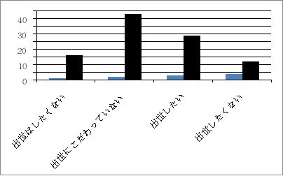
図2－2 若手社員の出世／昇進意欲・意識調査
（クロスマーケティングが首都圏１都３県 の 2 0 歳か ら 3 9 差までの男 女 100 0 人調査・参照）
必死になって管理職をめざし努力しても、ソニーやシャープ、東芝、その他にみられるように、事業部の売却、分社化、合併 、 M& A 、その他により社員は、移籍、異動、出向、退職を強いられます。それまでに得ていた管理職ポストも見直され、昇進するより降格する方が多い 。 5 5 歳になると「役職定年制度」を採っている企業も多い。この様な現実を見せくけられている若手社員達の中には、出世に対し冷めた目を向けている人達も少なくないのが現状です。
40歳過ぎても他社が欲しがる人材
スペシャリストや経営幹部といった特殊な募集でない場合は、40歳以上のミドル世代が選考に進むことが出来る企業は、目的重視志向で柔軟性が有る企業の場合が多い。
社会においても産業界においても「キーパーソンとして最も脂が乗った仕事が出来る世代が、40歳代～50歳代です。20歳代後半～30歳代の生き様が重要になって来ます。目的意識を持って入社して来た人達は、20歳代にコアになる業種を必死に探し自己研磨し、30歳前後で会社を飛び出し「起業」に挑戦する世代が一番多いのも、30歳前後の世代です。20歳後半から30歳代の業務に対する取り組み姿勢が、40歳代の人材価値に大きく影響して来ます。
40歳代に入っても企業が欲しがる人材とは、どの様な人材でしょうか。
① 考え方に柔軟性がある人。
② 想像力が豊かな人。
③ 人間的に素直な人。
です。
20歳代なら、異なる業界や異業種へ幾らでも転職できるチャンスがあるでしょう。30歳代以上になると、20歳代と違って、実務経験＋スキム（実務能力等》が要求されます。転職のパターンとして、
① 業界経験を生かし、同業界へ転職する。
前職より上のランクや責任範囲が広いポジションに就くケースが多いため、前職より組織規模が小さい会社に転職した方がチャンスがある。
② 職種経験を生かし、これまでと同じ職種で異業界へ転職する。
例えば、ＩＴ業界でキャリアを積んだ人が、ＩＴ業界以外の会社のシステム部門へ転職する。中堅・中企業では、システム部門の充実を図りたい企業が多く、ＩＴ技能に優れている人は転職のチャンスが多い。
③ 業務分析力、企画力、マネジメント能力に優れている人。
例えば、ＩＴ業界で、プロジェクトマネージャやリーダーを勤めていた人なら、課題分析力、プレゼンテーション力、折衝力などが評価され、転職できるケースが高くなるでしょう。業界が違っても、マネジメントスタイルが共通していれば、受け入れられる確率が高くなります。
④ 海外ビジネス経験者
海外事業部門で長年実務を行っていた人は、中堅企業で海外業務を拡張しようとするところでは、マネージャークラスで受け入れる企業が多分にあると考えられます。現に、エグゼクティブクラスで海外勤務者を求めている企業が少なくありません。海外拠点の責任者として経営に携わる場合は、ビジネスを行う上での総合的なポータブルスキムが要求されます。
エグゼクティブの求人・転職
終身雇用制が崩壊した我国では，有能な人材ながら当該組織で能力が発揮できない人達にとって、「転職」に抵抗感が薄れています。エグゼクティブ層の求人・転職状況をみて見ましょう。
2 0 歳代 ～ 3 0 歳前半の転職と違い、経営者、役員、上級管理者など「エグゼクティブ層」の転職率は、欧米諸国に比べまだ低いのが現状です。米国に比べる と 10 0 分 の1 程度、米国のＣＥＯ（最高経営責任者）クラスの転職は数十億円、数百億円と言う報酬が伴うため、金額では比較できませんが、ここ数年我国でも、社長として複数の企業を渡り歩く「プロの経営者」が注目されて来ています。例えば、ローソン、サントリー、ＪＡＬ，マクドナルド、ベネッセ、その他等々です。こ こ5 年間の動きを見ても、エグゼクティブクラスの転職決定数は、 約3 倍になっています（リクルートエグゼクティブエージェント）。
エグゼクティブの転職マーケットが育ってきていることは、採用する企業側にニーズがあるということです。ビジネス環境の激変により、新規事業分野への進出、海外への進出、新たなビジネスモデルの開発、新たなビジネス手法の開発をしようとしても、自社内にそれに対応できる人材がいない。これ等の事業の責任者として社外から実力のある経験者をスカウトしようとする考えが高まって来ました。現在のビジネス世界は、今か ら 200 0 年 ～ 250 0 年前の古代中国の春秋戦国時代に類似しています。一国の宰相クラスがライバル国の宰相になったり、有能な人材は積極的に採用し、責任と権限を与えて成果を挙げさせる。将来人材として活用価値（利用価値）が有ると評価した者は「奇貨おくべし」で育てる。まさに現在のグローバル世界のビジネス界とソックリです。
グローバルで通用するエグゼクティブ人材の転職形態には、
① 専門性を生かし、経営企画や最高財務責任者として異業界へ転職。
② 外資系企業に勤務している人材が日本企業に転職。
③ 海外で働くことを希望し、海外拠点の責任者として転職。
④ 東京などにある企業から、地方にある地場企業の経営幹部として転職。
などがあります。ただし、近年、投資ファンドや株主の力が強くなり、少なくと も3 年 ～5 年の短期間で収益を上げ、彼等に満足感を与えなければ、社長を解雇されています。欧米企業では、トップのすげ替えは当たり前です。
新技術分野での人材
技術開発は日進月歩です。最近注目されている新製品開発に、フレキシブルデバイスや有機エレクトロニクスが有ります。例えば、京セラは、ファインセラミックの圧電効果を応用した電圧素子とフイルムを組み合わせた「世界最薄フイルム状のスピーカを開発している。電圧素子の振動を樹脂フイルムが増幅し、音を形成します。この製品は、有期ＥＬテレビの音響デバイスやＰＣ，タブレット端末，車載用まで広い分野での活用が考えられます。
米国 の Display Search201 2年1 月の発表によりますと 、 201 1 年有機デスプィ市場規模 は 4 0 億ドル 、 201 8 年までに 約 20 0 億ドルまで拡大すると推計しています。フレキシブルデバイスや有機エレクトロニクス市場で求められている人材は、素材・化学・半導体・家電電子部品の技術者です。この分野の技術者で技術に自信があり、在職中の企業では報われていない人なら、新天地で自分の能力を発揮したいと思い、、転職に挑戦する新分野であると思います。
現在どのような分野で活躍している人達がこの分野に転職しているかをみて見ますと、
① 大手電機メーカー：半導体部門長 ： 4 8 歳・年 収 180 0 万円
↓
外資系電子部品メーカー：有機ＥＬ事業部長・年 収 220 0 万円
② 大手素材メーカー：生産管理部門課長 ： 4 2 歳 ・ 120 0 万円
↓
素地メーカー：製品開発部門部長・年 収 150 0 万円
③ 大手電子部品メーカー：研究開発主任・年 収 90 0 万円
↓
電子部品メーカー：フレキシブルデバイス開発課長・年 収 90 0 万円
④ 非上場半導体メーカー：製品開発主任：年 収 80 0 万円
↓
大手電子部品メーカー：有機ＥＬ研究開発部エンジニア：年 収 85 0 万円
⑤ 半導体メーカー：半導体設計：年 収 50 0 万円
↓
電子部品メーカー：有機ＥＬデバイス開発エンジニア・年 収 60 0 万円
フレキシブルデバイス・有機ＥＬエレクトロニクス市場で期待される技術者として、
① 機械系エンジニア ⑦サーバエンジニア
② 電機系エンジニア ⑧メディカル分野研究開発
③ 化学分野研究開発 ⑨ＩＴ・通信分野研究開発
④ 機械分野研究開発 ⑩医療機器研究開発
⑤ バイオ分野研究開発 ⑪ＩＴ／通信系プロジェクトマネージャ
⑥ 電機分野研究開発 ⑫薬事
などが挙げられます。
キャリア官僚の民間企業への転職が悪いのか
キャリア官僚を志す学生が減少しています。2017年度の総合職申込者が47年ぶりに低水準だった。1984年度まで上級職の申込者は、前年度比6％減の2万591人。同じ公務員でも政令指定都市などの地方公務員には人気ある。長時間労働のイメージが強いキャリア官僚（国家公務員）を敬遠する学生が多いようだ。 17年度の申込者は1万7637人。
官僚の長時間労働のイメージが申込者の減少につながっているようです。官僚の長時間労働や深夜勤務の大きな要因の一つに、国会答弁書の作成がある。特に、あいまいな質問や規定外の質問などが有る場合は、徹夜作業がになる場合もある。長時間労働が常態化し、民間企業が働き方改革を模索する中で、やり甲斐だけで有数な学生を霞が関に集めるのには限界になっている。
省庁が集中する霞が関で早期退庁する職員はほぼ皆無。大臣や幹部の国会答弁書の作成や資料作りなど国会対応は、官僚の重要業務。「旗振り役の経済産省以外で真剣にプレミアムフライデーに取り組む官庁は無い」（経済官庁幹部）
ＡＩの活用で国会答弁の下書きを作る実証実験を実施し、将来の実用化を模索しています。「働き方改革に取り組んでいるのに、自分達の職場の改革はなかなか進まない」（経済官庁幹部）。かって、、公務員制度改革に取り組んだ元経済産業省官僚の古賀茂明氏が厳しい事を言っています。
幹部官僚が能力不足でも降格すら出来ない公務員の身分保障制度は、能力のある若手の起用という面でも問題だ。若手官僚を取り巻く環境は、以前より悪くなっている。もともと役所は年功序列という典型的な日本型組織であるため、若手がやりたいことを自由にできる環境ではない。
それでもかっては、やっていることを大目に見ようという余裕が組織にあった。組織全体にゆとりが無くなり、みんなで一致団結して自分の所属省庁のために働かねばならないという内向き志向が強まっている。必然的に若者も同じ色に染まる。昔は「国のため」など青臭い議論も出来たが、最近では「そんな子供みたいなことを言っている」という雰囲気だ。
そのようになった大きな要因に、
① 天下り規制の厳格化で余裕がなくなったこと。
② 上の世代が長く居続けるようになったこと。
昔 は 5 0 歳代前半で大半が退官していた。キャリア官僚は課長までは横並びに昇進し、そこから先の審議官や部長、局長に出世出来ないと、その時点で肩たたきが行われた。今は、天下りが厳しくなり、定年ぎりぎりまでとどまる人が増えた。
若手からすると、「偉い人達はどうせすぐいなくなるから」「あ と 1 0 年待てば自分達の時代が来る」という意識だった。上の人達が有能ならよいが、単に役所にしがみついているだけの上司だと、若手は不幸だ。上が重たい組織だと、新しい事をやろうと言う気持ちも出てこない。
官僚が国民の為でなく省益のために働くのは、省庁に永年雇用されるような縦割り組織構成と年功序列制度（天下りを生む要因にもなっている）などの人事制度のせいである。
中央省庁の人事制度は確かにおかしいし、時代に即していないと思っています。同期の中から事務次官が出たら残りの同期が退職するか他所へ移籍する人事制度。次官になる年齢 は 5 0 歳前後でしょう。人生の中で最も充実して仕事が出来る年代 が 4 0 歳前後 ～ 5 0 歳代です。次官になれなかった同期の多くがキャリア官僚には優秀な人達が多くいます。これ等優秀な人材達を、単に「歴年齢」や硬直した人事制度の為に潰してしまうことは、人材の無駄使い以上何物もありません。
有能なキャリア官僚の中には、
① 官僚として有能な人材。
② 民間の組織内でも能力を発揮できる人材。
のタイプがあると考えます。
単なる次官競争に敗れはしたが、有能で民間企業でも能力を発揮出来る人材なら、大いに民間企業で活躍できるようにすればよいのです。従来型の「お土産付きの天下り」とは違います。民間組織で行われている「エグゼクティブとしてのスカウトであり、転職」です。有能なキャリア官僚を一律に天下り禁止にし、活用出来る能力や活躍出来る年数まで封止する「現状の天下り禁止法」には反対です。
例えば、経済産業省で働いている官僚たちは、グローバルな視野で業務を行っている人達が多数います。キャリア、ノンキャリアに関係なく責任のあるポジションで実務を行い、スキルを高めている人達は、１企業内でスキルを磨いできたキャリア人材の人達とは、業務に対する考え方、取り組み思考が異なると考えます。
特にグローバルな視野と感覚で業務をしなければならない業種の企業においては、このような人材が必要です。官僚世界の人事制度のため、有能な人材であっても省庁外に出なければならない人達を積極的に民間企業で受け入れるのが、なぜ悪いのでしょうか。官僚としては優秀だが実社会では使い物にならない人達がいますが、実社会でも大いに活用出来る実務能力を持っている官僚なら、エグゼクティブ人材として活用出来る制度にすべきです。
ミドルクラスのキャリア官僚、有能なノンキャリア官僚が省庁内だけの出世競争に血眼になっても、同期全員がトップになれるわけではありません。有能な人材なら企業に転職できる柔軟な制度を構築して置けば、官僚の世界では競争に負けても民間企業で活躍出来ます。セフティネットとして彼等を活用することが出来ます。また、若手官僚たちにとっても、上層部の異動が円滑に進み、プラス効果が大きい。定年退職後は、お土産付き天下りは廃止し、民間企業で行われている継続雇用制度みたいな形で、後輩官僚たちのサポート業務が出来る雇用システムを整備するのもよい。官僚だからと縛り付けるのではなく、官民間で人材の有効活用を積極的に進めるべきでしょう。
第４章
50歳代は熟年世代
50歳代は熟年世代
5 0 歳時点で社内の同年代の人達と自分を比べて見ると、これから会社の中でどれくらい出世するか否かは、「 おおよそ見当がついてくる 」ものです。ここで大事なポイントが「おおよそ」であって「確定」ではない点です 。 5 0 歳の時点で同期のトップと比べ出世が遅れていると思っていたのに、そこから諦めずに巻き返しを行い、最終的に役員となる人も少なからずいるのです。
役職停止年 齢 5 5 歳を目前にしても、「なお諦めず、最善を尽くして業務に邁進する」。サラリーマンの昇進は、たまたま自分が担当している業務領域に空が出来た、自分のことを評価してくれている上司がいたなど「実力以外の要素」に左右される部分が多分にあります。ビジネスマンの大多数は、「出世」に関心があります。同期・同世代 の 8 0 ％は管理職になれない時代です。しか も 5 5 歳役職定年を採っている組織では、この時点で執行役員以上になっていない人達は、役職を返上しなければなりません。そうすると、当該組織 で 5 5 歳以上役職者として残れる人達は、数％に過ぎません。
当該組織でのみビジネスマンとして職業人生を送りたい人にとっては，出世が出来たか否かが問題でなく、「自分のビジネスマン人生を最後まで手を抜かず、仕事を最後までやり切ることが出来た」という納得感と達成感を持って当該組織を卒業して行くことでしょう。しかし、出世競争に敗れ当該組織を卒業して行かざるを得なかった多くの人達にとっては、「あいつより俺の方が仕事をやり組織に貢献したのに・・」とじゅくじゅくたる思いで卒業していく人の方が多いでしょう。限られた１つの組織内での生存競争では、自前の理です。
この様な狭い領域での生存競争でのビジネス人生を目的にしていない人達は、若い時から広い世界で活躍したいとの自我意識持って日常業務に専念しながら、社外で通用するプロフェショナになるべく自己のスキル磨きをしています 。 2 0 歳代後半から、自分の能力を冷静に評価し、発揮出来る場を掴み転職していくか，起業していきます。
外向きで意欲的な人達は、新卒で入社した当該組織でビジネス人生を送ろうとは思っていません。そのために入社時点から人生設計を描き、それに向かって自己研鑽をしています。前者の会社人間とは生き方が違います 。 5 0 歳になってから当該組織に見切りをつけ転職を考える人もいるでしょう。あるいは、ヘッドハントを受ける人もいるでしょう。または，起業する人もいるでしょう。社外に通用する実務能力・スキルを持つ人は、自分を評価し活用してくれる場所を求め積極的に動く、あるいは、エグゼクティブクラス転職エージェントに登録して自分磨きをしていたのを実行するなど、行動を起こす最後のチャンスだと考えます。
会社人間として定年まで頑張ろうとする人達は、定年がゴ－ルです。現在は、昔のように定年後は、全員が年金を貰って悠々自適の老後生活は出来ません。公的年金 は 202 0 年まで段階的に受給年齢を引き上げ、最終的 に 6 5 歳からの支給に一本化する事になっています。今後も年金受給年齢の引き上げが行われるでしょう 。 6 0 歳からの生き方を考えておく必要があります。
50歳代の生き方
入社以来必死になって働いてきたと思っている50歳代の社員に対し、会社側は、「仕事の質・量に対し給与が高い」と見なしているところが、働く側が考えている以上に多いのが現実です。その一例が、在籍年齢が高いということで肩書きと給与だけが高い管理職者、および、管理職相当者が多いのも事実です。
企業はリストラを行う場合、一般的なやりかを見ますと、
① 幹部候補者: 期待する人材。
② 標準的な人材： 平均的な業務能力と仕事ぶり。
③ 問題人材： 業務能力が低く、他職種・他者への配置転換が望ましい
者。
に大別しています。②③がまずリストラ対象になります。
40歳代後半社員の90％くらいが、経営側から[標準人材]と見なされているといわれます。標準的人材と評価されている人達が「会社に貢献している人材」になるには、現状の業務のやり方を変え、例えば、開発部門や管理部門なら、高い専門性を発揮し、担当分野において「専門的知識やスキルはあの人が一番詳しい」と評価を受けることです。そのためには、常に実務レベルやスキル磨きを行っていなければなりません。マネジメントはいまいちだけど、担当業務に関しては部課内に生き字引的存在になれば、経営側の評価も違ってきます。
部下なし管理職でも、特定の得意先に特化した仕事を部長から直接任命される場合があります。この場合、一定の責任と権限が与えられます。ここで成果を出し、取引先との関係を良好にすれば高評価を受けます。
専門性の高さがあります。企業や組織の中枢業務分野で、「この人物は、定年後も手放したくない」と切望される人材になることが重要です。あるいは、新規事業として検討され、採用されるような仕事をしたいものです。また、マイスターとして後輩教育が出来る能力と人望がある人はなら、部下なし管理職者であっても人材育成や部員の教育を担当するのも良い。部課長クラスは本来業務に忙しく、じっくりと部下の教育まで行っている時間的余裕がありません。直属の部下でないので客観的な指導が出来ますし、人事評価権限が有りませんので、後輩社員達も気兼ねなく相談しやすいと思います。
また、上司が年下の場合、自分が旧部課長であっても立場をよくわきまえ、年下の上司のフォローや相談相手になる心構えで接した方が、組織に取っても当人にとっても好ましい結果になる。過去やプライドに固執せず、経験を生かし、大人の態度で柔軟に対処していく生き方が、50歳代社員には求められます。
人 生 8 0 年の我国では 、 5 0 歳 ～ 7 0 歳までは「熟年時代」です。
① 5 0 歳：熟年前期
② 6 0 歳：熟年中期
③ 7 0 歳：熟年後期
と考えると、人生への考え方も違ってくるでしょう。
6 0 歳で定年の眼で見ると「あ と 1 0 年か」と思い、社内の出世競争 で 2 0 ％以内に残れず、執行役員以上の役職についていない人達は 、 5 5 歳前後になると、「役職定年」にする企業が多い。役員になっている同期生を見てガックリする人もいると思います。社外に通用する実務能力がある人は、狭い会社内でウジウジするより新天地を求めて活動すればよいのです。
4 5 歳前後になると当該組織内における自分の立ち位置が分かって来ます。分かっていながら何も行動を起こさず、組織のルールに従って生きて行くのか、社外に活動の場を求めて自ら積極的に打って出るのか、分岐点になります。ここで重要になるのが 、 3 5 歳から磨き始めたポータルスキルの評価です。
5 0 歳代でもペースダウンせずに働いてほしい 。 6 5 歳までの再雇用や定年延長が定着している現在、就労の長期化により 、 5 0 歳前半の社員の士気向上を狙った研修や面談に力を入れる大手企業が増えて来た。中高年社員は昇進・昇給へのこだわりを捨て、改めて働く意義を問い始めています。例えば、
① NT T コミユニケーション
ソリューションサービス部でシステムエンジニアとして、オフイスビルやマンションに通信設備を入れる仕事をしている。研修と面談を受けるまで、日常業務を淡々と行う感じで働いていた 。 201 6 年の研修で見せられた自社の人員構成を見て、自社 の 4 8 歳 ～ 5 2 歳 と 4 1 歳 ～ 4 4 歳の社員数が、他の年代に比べ多く、多い年の社員 は 50 0 人近くおり、その世代が全社員の 約 1 0 ％を占めていることを知った。
同社は 、 201 6 年後半に非管理職 で 5 0 歳の社員全員 の 23 0 人を対象に、研修と社内キャリアコンサルタントによ る1人 3 0 分 ～ 4 5 分の面談をした。小宮山さんは面談で漠然と感じていた今後の仕事への不安なども話した。 「 5 0 歳までと同じ職場だが、昇格・昇給とは別次元で、現場でいい仕事に取り組もうと思いを新たにした」。それから、従来システムに加え 、 IoT
や人工知能など、新しい技術を取り入れた提案を積極的に始めた。顧客からの信頼も厚くなった。（小宮山寛 氏 5 0 歳）
② 博報堂
4 2 歳を対象にするキャリアデザイン研修に続き 、 5 4 歳向けの研修を導入した。全員参加で外部の講師を加え、自社の先輩社員による公開討論会がり、再雇用で会社に残った人、転職した人、起業した人と言う３パターンの話が聞ける。（常務取締役薗部真志氏 （ 5 4 歳）
5 0 歳を過ぎて仕事内容の変化に戸惑っていた薗部氏。討論会等で話を聞き、「好奇心や柔軟性を失わなければ好機となる」と確信した。
③ サントリーホールディングス
5 3 歳全員を対象にした「キャリアワークショッ プ 5 3 」に参加。同社 は 6 5 歳に定年を延長したのに伴 い 5 3 歳の研修を強化。研修では、会社人生の棚卸しをしてもらい、「自分の強みや興味は何か」を考える。各自に何をしたいのか描くよう促すのが狙い。（本部企画部 長: 椎名武伸氏 （ 5 4 歳）
椎名氏は、宣伝部、国際事業部、海外酒類事業部、ワイン企画部、環境部、エコ戦略部など様々な部署を経験。企業の社会的責任や環境が担当の今の部署は、海外子会社も含め様々な部門との連携が欠かせない。
厚生労働省は，仕事内容が変わる節目で、会社員が自分のキャリアについて相談できる機会を作る「セルフ・キャリアドックエイド」の普及に乗り出した。取り組む企業に助成金を支給する 。 201 7 年度中に民間企業と協力して、導入手引書を作成する。
4 0 歳代後半 ～ 5 0 歳代に入って、受講対象者の今後の生き方の研修をしなければならないのが不思議です。自分の生き様は、社会人になれば自ら目標を立て、その目標を達成すべく切磋琢磨して自らを磨いているはずです。ミドル世代になってまで研修を受けなければ、自分の進む道が分からにとは信じられない。組織内だけで通用するキャリア磨きでなく、「パラレルキャリア：社外で通用するキャリア」磨きをしなかった人は、転職も難しいでしょう。
50歳代で見える限界
やり玉に挙がっている「働かな い 5 0 歳世代」の代弁をしてみると、新卒採用時に「自社にとって人材」として採用したはずです。同期の中には当該組織の役員として活躍している人、社外に出て活躍している人がいる反面、研修を受けている人に分かれてしまっています。
この違いは「本人の資質」だけが問題でなく、日本企業の採用方法や育成の仕組みがまずあります。有能な外国人を採用する場合、この日本企業等の人事制度がネックになっております。外国人社員は、３年前後で自分のスキルを評価してくれる企業へ転職していきます。日本の社員は、定年まで一つの企業で働こうとするものが大半です。
新卒を大量に採用する一方、解雇するのは難しい。公務員は、よほどの不祥事をしない限り解雇することが出来ません。また、入社後徹底したスキル教育はしていません。各人が目的意識を持って、自己研鑽をするより方法がありません 。 5 0 歳代になっても社外で通用する実務能力・マネジメント能力が無いのがおかしい。
多くの日本の組織では 、 5 0 歳半ばになると、役職を外し待遇も下げる「役職定年」制度を採っている所が多い。役員などに昇進出来なかった管理職は 、 5 0 歳々半ばで強制的に降格となり、後輩社員の上司の下で平社員として働くことになる。この処遇に不満があれば、社外で出て活躍すればよいのです。その能力も気力もな い 5 0 歳代社員は、邪魔の扱いをされながらも会社にしがみついているより他がありません。この様な惨めな結果になったのは 、 2 0 歳代 ～ 3 0 歳代 、 3 0 歳代 ～ 4 0 歳代の生き方に大きな要因が有ります。会社が悪いのではなく、貴方自身の生き様に問題があったのです。
4 0 歳代後半になって、もはやこれ以上昇格・昇進が出来ないことに気づきます 。 5 0 歳代で自分の先行きも見えてきます。その一方、公的年金受給年齢 が 6 5 歳からの我国では 、 6 0 歳で定年を迎えても公的年金はもらえません。高齢化が進んでいる先進諸国では、年金受給年齢が引き上げられつつあります。現在ドイツでは 、 6 7 歳、オーストラリアで は 7 0 歳から受給となっています。日本でも受給年齢の引き上げが話題になっています。例えば 、 6 5 歳から、い や 7 0 歳からから、いやい や 7 5 歳からと、様々な意見が出ています。
6 0 歳定年を 、 6 5 歳定年に引き上げる動きも出ています。既 に 7 0 歳定年制を採っている企業も出て来ています。この様な時代の変化の中で 、 5 0 歳代で息切れをしていたのでは、企業が断腸の思いで定年年齢 を 6 5 歳 ～ 7 0 歳に引き上げてくれても、対応出来ないではないですか。
まだまだ多くの企業 が 6 0 歳定年を採っていますが 、 5 0 歳代で息切れした人がやっとの思い て 6 0 歳になり「これで定年だ。これからは自由に生きるぞ」と思っても、公的年金 は 6 5 歳からです。経済的にゆとりのある人 は 6 0 歳で退職すればよいですが、ミドル世代 の 6 5 ％強は、 「 6 5 歳までは働きたい」「体が元気なうち は 7 0 歳以上になっても働きたい」と考えています。
5 5 歳代で「役職定年」をを迎え、とたんにやる気を無くし、モチベーションも低下したまま惰性 で 6 0 歳定年まで会社人生を続けられては、若手社員の士気ににも影響します 。 5 0 歳代になると役員クラスになっていなければ、役職定年になることは、新入社員時点で承知していたことです。
会社における自分の立ち位置が分かって来ると、勤務態度に問題が生じて来ることを自覚することです。普段でも成果や業務能力低下等の嫌味を言われるケースが増えています。仕事への熱意が消え仕事への姿勢が消極的になったり、責任を持って最後までやらない、時間や職場のルールを守らないと言った無気力的な態度は、部課内の雰囲気ににもマイナスになります。
30歳の半ばから管理職の選抜が行われます。40歳代になりますと部課長・事業部長クラスの中から執行役員候補の選抜が行われます。40歳代になりますと、社外にも知られた有能な人材に対するヘッドハントやエグゼクティブとしての誘いがかかり、転職していく人が増えて来るのも、この世代です。
執行役員
管理職
|
2 0 歳歳代 3 0 歳代 4 0 歳代 |
|
|
|
|
非管理職
図3－1 3 0 歳半ばか ら 4 0 歳代で職務階級差が鮮明になって来る
非管理職の中にも優秀な人材が居るはずですが、役職名のみ増やすわけにはいきませんので、40歳半ばになっても非管理職の人材が管理職へ登用される率は低いと言われます。社内で評価されず、社外で高評価されている人材が、ヘッドハントやエグゼクティブとして招聘されるのもこの世代が多い。
社内に残っ た 5 0 歳代に起こって来るのが 図3－2 です。
|
4 0 歳代 5 0 歳代 |
|
|
役職定年
非管理職
図3－2 役職定年後は非管理職者と同じ位置
5 0 歳代半ばで役職についていた人達が「役職定年」になり、非管理職になります。一握りの人達が役員になり、残りは平社員です。肩書にこだわる人ほど役職定年になると落ち込みます。これが会社人生の終末です。社外で評価されている人材は、蓄積したスキルを生かして活躍する人達がこの世代に多い。外国のキャリア人材は、１組織で満足せずより高度な仕事をし、転職して昇格・昇給を狙って活動しています。
ジェネラリストは評価されない
例えば転職を例にとってみますと、海外では年齢が上がってもスカウト数がそれほど下がりませんが、日本では20歳代半ばを境に急落しています。海外ではスペシャリストが育ちやすく評価されますが、日本では様々な部署を経験させたジェネラリストが多い。
それぞれの業務のプロフェショナは少なく、当該組織内の事情に精通した社員ばかりが育つのが日本企業の特徴でです。当該企業内でのみしか通用しない業務のやり方のため、社外でも通用する人材育成や教育がなされていません。年齢が進むにつれ、高齢者の転職が上手くいかないのが日本の労働市場です。社外で通用しないため。60歳定年後継続雇用制度で働くより他が無い人が多い。
継続雇用で働く場合は、退職前と同じ仕事をさせられても年収は定年直前の年収に比べ50％前後へ激減するのが普通です。60歳代の継続雇用報酬は、50歳代の働き方を評価・査定して決まるといわれます。社外で通用するプロフェショナル能力とスキルを自己研鑽した人は継続雇用などでは働きません。60歳以後の生き様は、それまでの自己研鑽の集大成です。
40歳代までに管理職なっていなければ、50歳代の非管理職は邪魔者扱いをされると言う話はよく聞きます。特にバブル期に大量採用した人達が40歳～50歳に至った段階での取り扱いに企業は四苦八苦しています。
バブル期に大量に雇用し、バブル期が崩壊したから過剰人員を切り捨てなければならないと、大量生産／大量廃棄の発想で人事をやられたのでは、社員の人生を狂わせてしまいます。この様にバブル期に採用した大量の中高年者が溢れている原因は、企業の人事政策の結果であり、経営者の責任です。
現在日本企業で働く社員の平均年齢は、約42歳。団塊の世代は大量に退職しましたが、40歳～50歳世代は永続して存在し続けます。先年、国家戦略会議のフオンティア分科会が「40歳定年説」を報告書に纏め、政府へ提出したのが話題になりました。40歳定年制が本当に実施されれば、あらゆる組織（働く場所）から40歳以上は強制的に退職させ、15歳～30歳代までの労働者だけで組織を動かさなければなりません。
現在、平均年齢が20歳代のアジアの国では、若手リーダーが経済を引っ張っています。我国でも、1957年ダイエー社長の中内功氏は35歳。大手企業の社長就任年齢は平均約53歳でした。40歳代～50歳代のミドルクラスが管理職や役員として企業活動を行っていました。今日、団塊の世代の大量退職を契機に、「40歳で役員に」を目標に、企業間では若手社員を鍛え、将来の幹部候補生の育成を図る取組が広がっています。
60歳後も会社に残ってもらいたい人材になる
一般に55歳になると「役職定年」になるケースが多い。55歳～59歳までの4年間が一般的業務能力しかないミドル世代にとっては、居心地の悪い期間になるでしょう。役職を外されたらルーチン業務程度の仕事しか任せられない人物とはどのような人物でしょうか。非役職で会社人生を終わろうとしている人物とは、どの様な人物なのでしょうか。
社内の厳しい出世競争を勝ち抜き部課長・事業部長を務めていた人が、役職を停止された途端に無能化してしまうものなのでしょうか。「どうしてこのような人物が部課長になったのか」と後輩社員達や同世代から批判と揶揄されている人物なら、役職定年になり「肩書きが無くなった後はただの人」としてしか後輩社員達から見られない旧役職者も少なくないでしょう。
社内外で評価される人物は、ジェネラリストでなくスペシャリストです。
定年後は
① 研究部門や技術部門で専門職として活躍してもらいたい人。
② 中核業務部門でマイスター職として後輩社員の指導を任せられる人。
として当該組織に残ってもらいたいと言われるでしょう。社外で通用するスペシャリストは、ヘッドハントやスカウトの誘いがあります。ミドル世代になってジェネラリストレベルで満足してしまった人がいる反面、当該企業が手放したくないレベルのスペシャリストへ成長した人もいます。この違いは何でしょうか。
当該組織内で行われている研修会程度で、社外へ通用するスペシャリストになれるでしょうか。研修会は、しょせん研修会です。当人が入社時点、あるいは学生の頃の志を実現すべく人生設計をし、自己研鑽をしてきた人と、しなかった人の結果が、この差になったのです。ミドル世代になっても後輩社員と同じレベルの業務しかしてこなかった人や 後輩社員からの実務面の相談に対応出来ないミドル世代では、「追い出し部屋」へ移籍されても文句が言えません。
5 0 歳代人ってから、会社から評価される人物と評価されない人物をみて見ますと、
① 評価される人物
・過去の実績にこだわらず、何歳になっても業務に対する成果意欲、好奇
心を失わず、自己研鑽をしている人。
・世代の格差を乗り越え、円滑にコミユニケーションを取り、協力し合っ
て業務成果が出せる人。
・部下が上司になり、その下で業務をする立場になっても、現状を受け入
れ、後輩上司のサポート役とし協力して仕事が出来る人。
・当該組織を止めても社外に通用する専門性やスキルを持っている人。
② 評価されない人
・職能習熟度が中途半端で止まってしまい、年齢や社歴だけが上がってし
まっている人。
・与えられるルーチン業務だけを黙々とこなしている人。
・後輩社員の業務相談に的確に対応出来ない人。
・定年まで組織にしがみついていようとする人。
・業務意欲やスキル磨きなどに関心が薄れている人。
に分けられます。
会社は、ベテラン社員が稼いでいます。最近、、成果主義が厳しくなり、自分の成果を重視するベテラン社員が多なり、若手社員の育成が上手くいっていない組織が多い。生産現場では「技術の質が落ちた」という声があります。管理職やベテラン社員になると、自分がやるべき仕事で手が一杯な人が多く、自ら若手社員の教育まで行う余裕が有りません。考えれば各種育成方法が有るでしょう。
社外に通用するスキル磨きをする
「役職定年者」の使い方の一つに、有資格者や各業務部門のベテラン社員に「マイスター職」を与え、後輩社員のサポート業務に専念させるやり方が考えられます。例えば、国家資格、および、国家資格準じる資格があります。これや有資格者達は、ルーチン業務から離れ、後輩社員の業務相談、業務指導などサポートに専念させます。
例えば、社会保険労務士、ファイナンシャルプランナー、中小企業診断士、司法書士、ビジネス実務法務検定合格者，販売士合格者など、ベーシックな資格：会計・法律・マーケティング分野の資格です。生産・技術部門にも、国家資格が有ります。これ等有資格者達は、これら専門知識を生かして、社員の業務相談、業務指導、社内研修講師等で活躍してもらいます。コンサルタント（社内コンサルタントも含む）は 、 201 7年4 月から国家資格になり、無資格者は、コンサルタント名を名乗れなくなりました。
従来民間および国家認証のコンサルタント資格を持たない人が、企業内コンサルタントとして活躍していまいたが 、 201 7年4 月以降無資格者は、企業内コンサルタントを呼称出来ません。改めて資格試験を受けて有資格者になるか、強いてコンサルタントと呼ばず、「講師役」「指導担当者」でも良いではないですか。肩書など問題ではないでしょう。
後輩社員達の多くが、業務をしている上司になかなか相談や教えを乞うことが出来ません。実務経験や専門知識がが豊富である先輩社員になら、気兼ねなく相談や教えを乞うことが出来ます。これ等先輩社員達も、自分の得意な分野で後輩社員の役に立つことで、業務も楽しく生きがいを感じるはずです。有能な役職定年者をこの様な活用をすることは、組織に取ってもプラスです。
本文中でも再三入社後自己研鑽したかを問うていますが、総務省が「平 成 2 4 年就業構造基本調査」した結果があります。ミドル世代になってからも自己研鑽したか否かの結果を見ると、図３－３になっています。
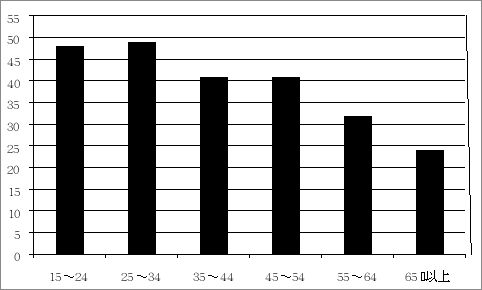
図3－3 有職で職業訓練・自己啓発をした人の割合
（総務省「平 成 2 4 年就業構造基本調 査: 調査対象者 ： 640 0 万人」参照）
大手企業 の 5 0 ％が導入している「役職定年制度」で、部課長社員でも、執行役員などになっていない限り 、 5 0 歳半ばで役職を解かれ、降格となり給与も減少する。役職定年になった者への敗者復活制度を採っている企業は少ない。自己研鑽は、当該組織内でのみ通用するスキル磨きもあれば、会社人間で終わりたくない人は必ず起業を目標にしています。起業をすると社名や肩書は通用しません。
当人が持つ実務能力・イノベーション能力等が問われます。社内外に通用するスキル磨きの第一段階は、少なくと も 2 5 歳 ～ 3 0 歳前半です。第２段階 が 3 0 歳前半か ら 4 0 歳前半です。この段階で部課長になっている人は、当該組織で管理職として日常業務をやりながら、自己研鑽をするのは辛いものです。当該企業で同じ部課長者でも「実務知識・実務遂行能力差・スキル差」があります。当該組織内だけで通用する業務能力を持っただけの会社人間は 、 5 5 歳前後で役職停止になると、社外で通用する自分磨きをしていないため転職したくとも、なかなか上手くいかないのが現状です。
役職定年後の生き方
55歳前後で役職定年になり、処遇も役職時代に比べ引き下げられます。定年までの残り期間、プライドが高い人ほど恥辱感を味わうのがこの期間です。少なくとも実務能力に優れた管理職経験者は、当該組織に取って重要な人材であり財産です。当該組織に役職定年制度が有ることは、入社時からわかっていたはずです。
役職定年～59歳まで当該組織に残った人は、ごく少数の人を除き当該組織に残って働くでしょう。役職定年後は一般社員と同じ立場で働くことになります。このの切り替えが出来ない旧管理職者は、後輩社員にとって邪魔な存在以外何物でもありません。「ミドル層と仕事をして困る事」の調査があります。
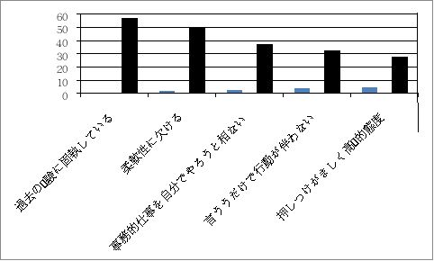
図3－4 シニア仕事をして困ること
（企業活力研究所「シニア人材の新たなる活躍に関する調査」参照）
若者の仕事が増えることに加え、シニア世代やミドル世代と混在して仕事をしなくてはなりません。自分の立場を認識しないシニアやミドルの存在が、後輩社員達から反発を買っているケースを多く見聞します。
団塊の世代やバブル期入社世代が退職して行ったとはいえ、高齢社会の我国では、シニアやミドル世代の社員が居残り続けるでしょう。若手社員にポストを与えるため、これら世代への対応は厳しくならざるを得ないのです。
転籍・退職・ヘッドハント
5 0 歳世代は、バブル世代が退職しても、当該組織で定年まで生き残るのは厳しい現実があります 。 5 0 歳代になって転籍・出向は、当該組織から切り捨てられた思いがするものです。大手企業でも 、 5 0 歳前半に充てるポストが不足しています。大手企業の経営者の中には、転籍・出向を「奇貨として」頑張った人達が多々います。要は、気持ちの持ちようです。
転籍・出向
定年を早める意味で、自らの関連会社や一般企業に転籍させているところが多い。例えば、今般問題になっている東芝では、事業部を閉鎖するに伴い4万人の社員を移籍・転籍させています。50歳代での転籍・移籍は、再び本社には戻れない事実上の片道キップである場合が多い。リストラされるより良いかもしれませんが、会社人生では当たり前に行われています。
我国の多くの組織には、転籍制度や出向制度があります。転籍や出向した先でも色々と嫌なことがあり、心安らかな会社人生が送れないケースが多々ある。受け入れ先企業にしても、期待するような有能な人材が来てくれたら喜ばしいが、期待外れの人物であると処遇も冷たいのが一般的です。当人にとっても日々の勤務に苦痛を感じるでしょう。落ち込むか、次のステップへのバネにするのかは、当人の気持ち次第です。
退職
早期退職制度を採用している組織も多い。早期退職と言えば聞こえはいいが、事実上はリストラです。大手企業になると，万人単位でリストラが行われています。例えば、初期退職に自ら応募するやり方、リストラ対象者を事前に決めておき退職を迫るやり方、事業部を廃止するに伴い当該事業部全員を解雇するやり方等、各社各様のやり方が採られています。
早期退職制度を採る場合、初期では規定の退職金に年収の数倍の加算金を上乗せしたりしています。退職条件がいい初期段階に応募に応じた人と嫌々ながら最後に応じた人とでは、受け取る退職金等に大差が生じているケースを多々見聞します。自主的早期退職応募者には、会社に残っていてもらいたい人材が多くおり、会社が引き留めに苦労をするというケースも多い。
ソニーでは累積7万人以上の社員をリストラし、Panasonicも数万人以上にをリストラしています。ここではシャープの一例を取り上げてみます。
国産初のＴＶや電子シレンジから液晶ビユーカム、ザウルス、プラズマクラスター 、 AQUO S など、画期的な製品を開発・販売してきたシャープが、経営悪化を理由 に 4 5 歳以上の社員を対象に希望退職を募った。その結果 、 320 0 人を超える社員がシャープを去って行った。
経営の中枢で幹部社員として活躍していたＡ氏 （ 5 0 歳）は、ミドル世代のビジネスパーソンに伝えておきたいメーセジがある。Ａ氏は新卒で入社後、家電機器開発エンジニアとして勤務。「モノ作りだけでなく、マーケット分野の仕事がしたい」と自ら手を挙げ経営企画へ異動を許された。亀山工場操業前 の 200 3 年頃、新規開発商品営業部長として市場のシエア拡大に取り組んでいた。
だが、経営が急激に悪化し、Ａ氏自身統括部長という立場で、部下 の 3 0 ％をリストラすることになった。リストラが終盤になった頃、「統括部長はどうされますか」と人事担当者がＡ氏に尋ねた。営業本部自体も解体することが決まっていた。「もうすぐ鴻海（ホンハイ）精密工業の郭台銘氏がやって来るだろう。そうして、会社は変わるだろう。会社が本気で変わるためには、一気 に 4 0 歳代にバトンを渡すべきだと感じた。既に 、 5 0 歳以上の部長全員がいない。自分 も 5 0 歳代だ。退職しよう」と決めた。
「どうして辞めるののだ。貴方は退職勧奨の対象ではない」と人事担当役員から言われた。しかし、退職の決心は変わらなかった。いくら業績が悪化しても、決してシャープの全てが悪いわけではない 。 4 0 代を中心にシャープの地道なモノ作り の DN A が継承されることを信じて退職した。
9 月に退職を決意 。 1 1 月から転職活動を始めた。活動を始めてすぐに自分の甘さを痛感した。自分の経験を生かせる仕事をと思ったが、統括部長という肩書が邪魔をし、エージェントからも「貴方の処遇に合うポジションが無い」という理由で不採用が続いた。求人が有っても、競合会社がシャープでの肩書や人脈を期待する一時的な顧問の打診がほとんどだった。
人脈も２年も経てば入れ替わって使い物にはならない 。 5 0 歳を超えた転職活動がここまで厳しいとは思わなかった。それでも、モノ作り の DN A や企画の実務能力を生かして、たとえ一兵卒になったとしても自分の能力を発揮出来る職場にこだわった。官公庁が主催するビジネスナビゲーターや企業の顧問としての仕事 も 2, 3 社やってみた。自分が一体感を感じられない仕事には、面白みがない事も良く分かった。新しい仕事をスタートさせたいと思っていた折、商社から声が掛かり、経営企画の仕事をすることになった。
中長期的な営業戦略立案から、現場の営業支援業務まで横断的に担当する職場だが、トップのそばで仕事が出来るし、自らパソコンで作業を行いながら戦略を描ける仕事にやりがいを感じる。現場重視主義で、汗をかいてコミユニケーションを重視する気風も自分に合っている。シャープも最初はそうだったからだ。「業界をまたいでも、業務が同じなら選択肢がある」という発想で、転職活動に自分なりの軸を置いたことも功を奏したと思っている。
シャープ時代を振り返ると、「なぜあの時、液晶の次は液晶などと言い傲慢な戦略を変えられなかったのか」とジクジクたる思いに駆られる 。 200 0 年前半には、ザウルスを右手に持ち、シャープに敬意を表しながら積極的なアプローチがあった。海外有名企業のトップからの提案にも耳を傾けなかった。「シャープというロゴが付かないものを作るのは下請けだ」という意識。ハードデバイスではなくソフトやエクスペリエンスを売ろうとしていたアップルの本質も、当時のシャープには全く見えていなかった。
① 経営者が裸の王様になっていた
② 追従する取り巻きがそれを加速させた。
③ 強烈な欲望やトラウマがマーケットや顧客を見る目を塞いでいた。
④ 手段の目的化が暴走してしまっていた。
Ａ氏が 、 3 0 歳代 、 4 0 歳代にビジネスパーソンに伝えたいことは、
第１番目として、
① 本当にそれでいいのか？を３回繰り返せ。
② なぜそう考えるのか。
③ どう動くべきなのか。
④ 自分自身を疑って徹底的に答えを出せ。
Ａ氏が経営企画に配属された時代、上記項目を常にトップから言われ続けた言葉だ。。この言葉が今でも、どんな仕事をする上でも生きている言葉だと思っている。上司に言われたからでもなく、会社の方針に合わせたものでもなく、あくまでも顧客を見て、マーケットに受け入れられる物作りを最優先に考えていくことです。
第２番目として、
① 視野を広く、時間軸を長く、志向を深く持ち続けること。
② 会社の中にいると、経営方針が健全でなくなった時は、さらに社内政治や思惑に絡められてしまいがちである。必ず好奇心を持って、マーケットを見続けることで、会社の状態に影響されず自分なりの尺度を持ち続ける。
第３番目として、
① 自分の人脈を大切にする。
転職活動をしてみてわかったことが、最初は自分の職務経歴を書き並べているだけであったが、経歴の裏側にある多様な人との関係が、最後は自分の道を切り開く助けになることを学んだ。
同じくシャープの技術部門一筋で働い たB 氏 （ 5 1 歳）は 、 5 1 歳という年齢から、応募書類だけで落とされ続けているという。元シャープ社員の再就職に向けて、様々な支援を続けている奈良労働局の担当者は、 「 201 5年9 月末の希望退か ら5 カ月近くがたった今でも、行き先が決まった人は、ま だ 4 0 ％だ」と厳しい現状を語っています。あれか ら2 年。元シャープ社員の中途退職者が一人でも多く再就職出来ることを念じています（奈良労働局担当者）。
元シャープ社員達の中途退職者が再就職で苦闘している中で、シャープ の 201 8 年の経営実態を見ますと、「シャープ の 201 8年3 月期は、連結最終損益 が 40 0 億円前後の黒字（前期 は 24 8 億円の赤字）」に転じる見通しです。液晶パネル事業や家電製品販売が伸び、コスト削減などの合理化も寄与する。最終黒字は４期ぶり。台湾の鴻海精密工業の傘下で進める経営再建が、効を奏した結果になっている。
201 7年4 月に、東芝の半導体メモリー事業の売却を巡り、シャープが出資を検討していることが分かった。親会社の鴻海と組んで入札に参加する方針です。鴻海は１次入札で 約3 兆円の買収額を提示。シャープは鴻海からの要請に応じ て 2018 5 月中旬に締め切られる２次入札から参加し、買収資金の１部を拠出する方向で、今後検討を進める。シャープは、 「 IoT ] 関連事業を成長の軸にし、メモリー技術はその核になる。自社事業との相乗効果が高いと判断した。
また 、 201 7年5 月、シャープはソフトバンクグループがサウジアラビアなどと共同で発足させる投資ファンドに参加すると発表しました。投資期間 は5 年間で、最 大 1 0 億ドルを拠出する。あらゆるモノがネットで繋がる 「 Io T 」分野を中心に、世界の最先端テクノロジー企業と事業提携出来る可能性を探るほか、シャープの収益向上にもつなげる狙いがある。
投資ファンドは「ソフトバンク・ビジョン・ファンド」 。 Io T や医療分野などで最先端テクノロジーへの出資を予定。最大の出資者はサウジ政府系の公共投資ファンド で 45 0 億ドル。ソフトバンク は 25 0 億ドルをそれぞれ拠出する。運用規模 は 1 0 兆円を超えると見られている。シャープを傘下に収めた鴻海精密工業や米アップル、米クアルコムも参加を決めている。シャープ は 201 7 年度から 、3 か年の中長期経営計画 を 201 8年5 月に発表したが、この中 で Io T 関連事業の拡大に向けた方針を掲げる。
最近のシャープの活躍を見ている転職に成功した人、および、思うような職場が見つからなかった元シャープの中途退職者一同は、どの様な思いでこの成果を見ているでしょうか。彼等の心中を思うと、胸が痛くなる思いです。
転職・ヘッドハント
2018年度の大学新卒者の求人倍率が1.8倍と、売り手市場になっています。中途採用による人材獲得競争も激しくなっている。例えば、IoTが広がりつつある現在、電気メーカーがＩＴ業界からＩＴ技能者の大量採用に動いています。また、有機ＥＬをアップル」がIphoneに搭載する意向を示してから、有機ＥＬに対する関心が高まり、関連技術者の中途採用が急増しています。
Iphoneの原型はソニーが開発したが、アップルが開発したIphoneに市場を奪われ、ソニーの電子書籍リーダーも米国で健闘しましたが、Amazonn Kindle等に敗れ米国市場から撤退しています。有機ＥＬも日本のメーカーが開発しましたが、現在はサムスンが世界の市場を席巻しています。現在、次世代製品として注目されている原型は日本のメーカーが開発しているのが多くありますが、経営発想・経営者の資質などから後発海外企業に食われてしまっているのが現状です。
米国の調査会 社 HI S によりますと、2020年には世界で500億個を超えるデバイスがネットと繋がると見込んでいます。あらゆる機器から集まるビッグデーターをどのように活用し、新たな製品やサービスに反映させるかが、課題になっています。センサーや通信、データ分析の技術を既存事業に生かせる人材が社内には不足しており、新卒社員を教育する時間的余裕もない。そうなるとＩＴ業界でキャリアを積んで来たＩＴエンジニアが狙われます。
「求める条件がそろわなくとも、必要人員の確保が先」という採用企業が少なくない。最近話題になっているフィンテックなども必ずＩＴが絡んでくる。「現在の採用市場のキーワードは専門性」。これまでのＩＴエンジニアのキャリアは、今の会社で働き続けるか，起業するかの２者択一であった。そこへ異業種が人材確保のため、業種を超えた移動が始まっています。非ＩＴ起業で多いのは社内システム要員です。図3－5に示してみます。
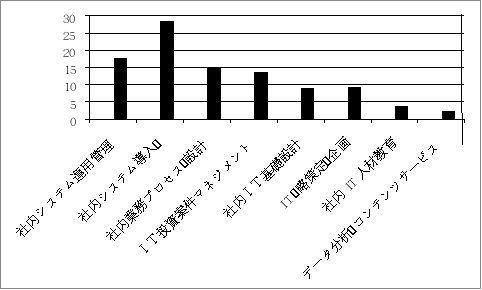
図3－5 非ＩＴ企業出多いのは社内システム要員一例
（ ＩＴ人材白書2015－ＩＴ利用側の人材割合）参照
現在、ＩＴ業界自体人材不足が年々高まっています。ＩＴ人材で求められているのが、セキュリティ分野です 。 Io T が広がる中、通信技術者に対するニーズが高まっています。ＩＴ業界から異業種に転職した場合、何処まで年収アップが見込めるのかといえば、例外的なケースを除き、年収増はあまり実現していないようです。これで果たして有能なＩＴエンジニアを採用できるでしょうか。
我国の製造業では、まだ年功序列的賃金体系発想から抜け出ていないところが多く、「優秀なエンジニアを中途採用して特別扱いし、在職中の社員より給与が高く出来ない」というところが少なくない。この様な考え方に固執しているから、海外の有能な人材がなかなか採れない大きな要因の一つになっている。
高い役職を用意し、年 収 100 0 万以上の待遇で迎える企業も中にはいます（例外的に年 収 200 0 万円 ～ 300 0 万円というケースもある）。自社の人事・賃金制度を根本から見直し、より柔軟な報酬体系を採らなければ、国内・海外の有能なプロフェッショナル人材の採用は難しい。例えば、ネット企業の業績が急激に伸びた数年前でも、グリーは新卒者 に 150 0 万円 、 DN Aは 100 0 万円という報酬を提示していました。、人材獲得競争が激化した現在は、異業種を交えた人材獲得合戦が起きています。上述した様な事を言っている企業では、優秀な人材を獲得できません。
日本では、ＩＴ分野に限らず様々な業界で人手不足が叫ばれています。この中で、米国でダイレクト・ソーシングという名で広く知られている採用手法が、日本でも活発になって来ています。ダイレクト・ソーシングでは、人材データベースやＳＮＳなどを駆使して、自社が求めるスキルや経験を持つ人を探し出すやり方です。
探し出しても相手は必ずしも転職活動をしている人とは限りません。現在の職場に満足している場合もあります。自分の採用サイトで募集をし、応募してくるのを待っていたり、人材紹介会社に採用を委託したりするのではありません。まさに「奇貨おくべし」で、これはと見込んだ人物には、直接積極的に転職の働き掛けをしています。
転職を検討しているシニアやミドル社員の属性を見ますと、
① エレクトロニクス産業
② 金融機関・デパート・製薬産業
③ 流通・サ－ビス産業
に大別できます。
再就職市場に流れ込んだ人材の数量では、「エレクトロニクス産業出身者」が圧倒的に多い。中でも大手半導体ルネサスエレクトロニクス 、 panasoni c 、シャープ、ソニーなどが目立ちます。職種は、生産ライン従事者と機器開発エンジニアがほどんどです。国内企業に転職しただけでなく、海外、特に、韓国や中国企業に転職した日本人技術者が非常に多い。韓国：サムスンへ流出した日本人技術者の一例を 図3－6 に示してみましょう。
|
|
専門分野 |
|
専門分野 |
|
Panasonic |
有機ＥＬ |
JVC KENWOOD |
通信系 半導体回路 |
|
Panasonic |
液晶・表示装置 |
Panasonic |
デジタルカメラ |
|
CANON |
デジタルカメラ |
住友化学 |
液晶・表示装置 |
|
NEC |
リチウムイオン電池 |
Panasonic |
光デスク |
|
HITACHI |
半導体集積回路 |
東芝 |
燃料電池 |
|
YAZAKI |
リチウムイオン電池 |
CANON |
プリンター |
|
JVK KENWOOD |
無線通信 |
京セラ |
携帯端末向け カメラ |
|
ＳＯＮＹ |
有機ＥＬ |
三菱電機 |
液晶・表示装置 |
|
三菱電機 |
半導体集積回路 |
HITACHI |
プリンター |
|
CANON |
デジタルカメラ |
KONIKA MINORUTA |
デジタルカメラ |
|
富士通 |
半導体集積回路 |
ALPS |
光デスク |
|
KONIKA MINORUTA |
デジタルカメラ |
KONIKA MINORUTA |
デジタルカメラ |
|
富士通 |
無線通信〔携帯端末関連〕 |
NEC |
有機ＥＬ |
|
Panasonic |
バッテリーパック |
東芝 |
加熱調理器 |
|
NEC |
通信系半導体回路 |
Panasonic |
液晶・表示装置 |


図3－6 韓国：サムスンへ流出した日本人技術者一例
（週刊ダイヤモンド ： 2013.11.1 6 参照）
韓国にはサムスンだけでなく、韓国ＬＧ，その他企業へ転職しています。また、中国にはボルノ，華為、ＺＴＥを始め多くの企業へ日本人技術者が転職しています。最近では、サムスン等は、白物家電には関心が無く、有機ＥＬや電池、その他次世代技術の獲得に主軸を置いているようです。エグゼクティブクラスの人材に対しては、ヘッドハンティングも行っていますどれぐらいの人材が韓国・中国・台湾企業に転職やヘッドハンティングされているのか最新の情報が分かりませんが 、 201 3 年代のデータによりますと、韓国サムスンには、
１ Panasoni c： 5 3 人
２ ＮＥＣ： 4 7 にん
３ 東芝 ： 3 9 人
４ 日立製作所 ： 3 9 人
５ 旧三洋電機 ： 3 5 人
６ ルネサスエレクトロニクス ： 3 1 人
７ 富士通： 2 7 人
８ ソニー： 2 6 人
９ 三菱電機： 2 5 人
1 0 キャノン： 2 0 人
：
に上っています。
ソニーの場合を見ますと、大企業になったソニーでは取り組めない研究開発に挑戦する目的で設立された「ソニー木原研究所」や「ソニー中村研究所」が相次いで廃止され、デジタル。リアリティ・クリエーション：ＤＲＣの開発など最先端の映像技術の研究開発に取り組んできた Ａ 3 （エーキューブド）研究所も解体され、多くの開発プロジェクトも中止や廃止に追い込まれました。
ソニー社内に居場所を失った Ａ 3 研究所の近藤所長と 約 2 0 名の部下の若いエンジニア達は、ハイエンドのＴＶの開発を続けるため Ｉ 3 （アイキューブド）研究所を立ち上げました。近藤氏と共にＴＶの高画質化に挑んだ「徳原部隊」と呼ばれ た 20 0 名を超える開発エンジニア達です。徳原部隊も解体され、近藤氏達と同じくソニー社内に居場所を失った。
不遇な環境に置かれた徳原氏に対し、サムスンが最高の礼を持って接触してきた。徳原氏が持つ「ＴＶの絵作り技術を、サムスンの若い技術者に伝授するとともに、画質の分かる人材を育成して欲しい」という誘いでした。日本のＴＶが世界市場で優位に立てたのは、この「絵作りの技術」が優れていたからです。この技術がソニーで叶わないならば、最高の礼を尽くして望まれるならば、たとえ相手がライバル企業であっても、心が揺れるものです。最終的に徳原氏はサムスンへ移った。暫くして、ソニーのＴＶ画質とサムスンの画質が類似していると話題になった。
経営者側の判断ミスでキーパーソン的人材がソニーを離れるケースが、ＴＶ事業部に限らず他の部署でも見られた。プロジェクト・リーダーの様な将来ソニーの経営を担うべき人材達もソニーを去って行った。ソニーの成長戦略やコア事業の育成が順調に進まない、エレクトロニクス事業の再建が遅々として進まない等の大きな要因にキーパーソン的人材がソニーを去ったことにもある。
エグゼクティブ転職
エグゼクティブクラスでの転職、ヘッドハンティングでの転職は一般の転職者とは違います。このクラスの転職を望む人は、社外で通用する実務能力、実務経験（パラレルキャリア）やポータルキャリアなどのスキルが要求されます。例えば、ハローワークや一般の人材派遣業者を利用するのではなく、エグゼクティブ転職エージェントの利用が好ましいと考えます。エグゼクティブ転職エージェントとしては、
① 日経＆リクルートグループが行っているハイクラスビジネスパーソン向けスカウトサービスである「エグゼクティブ転職」エージェント。
② 「ヒューマンタッチ キャリアエージェント」
等々があります。
両社とも「無料登録」をし、まず、転職相談に乗ってもらい、自分の能力評価をしてもらい、エグゼクティブ転職に不足している諸点のアドバイスを受け、時期を見て転職活動に入る方法が好ましい 。 5 0 歳代に入ってから急に転職活動しても、上手くいかないケースが多い。少なくとも、勤めている企業における自分への評価や活躍の場の有無、出世度等が分かってく る 4 0 歳中盤頃から、エグゼクティブエージェンシーへ登録して、転職準備をしておくのが良いと考えます。
事例：日経＆リクルートグループ「エグゼクティブ転職」
「エグゼクティブ転職」では、日経グループとリクルートグループが求人企業から預かっている多数の転職情報の中から厳選したハイクラス求人案件を特別に公開しています。日本国内に限らず、、アジアを中心とし た8 カ 国 3 0 拠点以上のネットワークを活用して， 約9万 830 0 件 （ 201 3年7 月末時点）
の求人案件を保有するエグゼクティブ・リーダ向け求人案件です。
年収1000万円以上のエグゼクティブ転職案件例
① シニアマネージャークラス ： 120 0 万円 ～ 200 0 万円
② シニアコンサルタント ： 140 0 万円 ～ 200 0 万円
③ 事業開発部長 ： 150 0 万円 ～ 200 0 万円
④ 戦略ソリューションマネージャー ： 200 0 万円 ～ 250 0 万円
金融・不動産業界
① 商業施設企画開発：700万円～900万円
② アクチュアリー：600万円～1200万円
（経理・損益管理・決算担当）
③ リスク管理／内部管理業務企画推進：600万円～1200万円
④ 再生支援コンサルタント：1000万円～2500万円
電気・電子・機械・制御関連
① 設計技術マネージャー：750万円～900万円
② 車載用制御回路設計マネージャー：700万円～1000万円
（課長～次長クラス）
③ 電気設計エンジニア：600万円～1200万円
④ エンジニアリング／プログラムマネージャー：800万円～1200万円
⑤ 品質管理ダイレクター：900万円～1400万円
事務・管理・企画関連
① 海外ファイナンス統括：900万円～1000万円
② 経理部長： 800万円～1200万円
③ 人材・組織開発課長： 800万円～1300万円
④ Sr.Produkut Manager: 900万円～1400万円
ＩＴ／ネットワーク業界
① システムエンジニア・開発者：600万円～800万円
② システム開発部長： 800万円～1000万円
③ IT戦略・ITプランニングコンサルタント：800万円～1100万円
④ CA D システムエンジニア：600万円～1200万円
⑤ Lead IT Auditor: 80 0 万円～1200万円
営業関連
① 次期営業本部張候補： 800万円～1000万円
② sales & Maketinng: 1000万円～1200万円
③ Sr.Contents Acquistion Manager:900万円～1400万円
④ アカウントマネジャー： 800万円～1500万円
⑤ ウエルスマネジメント業務：1000万円～3000万円
経営幹部・コンサルタント
① 経営企画（事業戦略担当）： 700万円～1300万円
② 小売業界担当コンサルタント： 800万円～1300万円
③ 業務改善・改革コンサルタント： 600万円～1500万円
④ シニアコンサルタント《医療分野》：800万円～1500万円
その他・エグゼクティブ転職セレクト求人
① 販促マネージャー： 80 0 万円 ～ 100 0 万円
② 新規立ち上げ事業統括責任者： 80 0 万円 ～ 110 0 万円
③ 市場営業リーダークラス： 80 0 万円 ～ 120 0 万円
④ 製鋼プラントエンジニア： 80 0 万円 ～ 200 0 万円
⑤ 経営コンサルタント： 95 0 万円 ～ 200 0 万円
（マネージャークラス）
⑥ 購買部長： 90 0 万円 ～ 110 0 万円
⑦ 投資信託営業（マネージャークラス） ： 90 0 万円 ～ 110 0 万円
⑧ プリセールス （ S E ）： 90 0 万円 ～ 130 0 万円
⑨ プロセスライン設備エンジニア ： 80 0 万円 ～ 200 0 万円
⑩ 出店開発部長候補： 100 0 万円 ～ 200 0 万円
：
多種多様のエグゼクティブクラスの求人があります。
「簡単スカウト登録する」（無料）しておくと、日経＆リクルートグループのヘッドハンターからエグゼクティブ・ハイクラス求人案内の紹介を受けることが出来ます。また、無料の相談窓口もあります。
キャリアコンサルタントが国家資格に
求職者と求人企業のマッチングや企業内で社員の仕事コースの相談に乗ったりする「キャリアコンサルタント」が2017年4月から国家資格になりました。これ以後、無資格者は、コンサルタントを名乗れなくなります。厚生労働省は、2024年度末までに現在の2倍の10万人に増やす計画です。
資格取得には30万円～40万円掛かります。日立製作所キャリアサービスグループ部長代理の小寺亜美氏（47）は、毎月2～3回、１泊２日で係長級社員が対象の「キャリア開発ワークショップ」を開らいています。参加者は毎回約20人で年間800人に及んでいます。小寺氏は複数の民間キャリアコンサルタント資格を持ち、10年の営業経験と専門知識を持つています。
このキャリアコンサルタント資格に大きな変化が出て来た。もともとは民間の資格として発達して来ました。特定非営利活動法人:日本キャリア開発協会で、約1万5000人にキャリア・デベロップメント・アドバイザー（CDA）を認定しています。厚生労働省は少し遅れて積極的になり、社員がCDAなど10の民間資格を取った場合、所属企業に助成金を出す養成促進策を始めました。
こうした民間資格を持つ人を「標準レベルコンサルタント」と称します。2008年、ベテランコンサルタント向けの「熟練・指導レベル」資格として、国が「キャリアコンサルティング技能士１級・２級」の検定を始めました。標準レベルは民間。上位資格は国という形になりました。
安倍信三内閣の産業競争力会議は2013年末、労働力の流動化をめざし、キャリアコンサルタントの積極活用を打ち出しました。これを受けた厚労省は2015年、職業能力開発促進法を改正。民間資格だった標準レベルコンサルタントは、2017年4月から国家資格になります。
厚労省は現 在5 万人弱のコンサルタントを 、 202 4 年末 に 1 0 万人に倍増させる計画です。企業内での活用を前提にします。現在、企業に正社員として勤めながら人材開発に関与するキャリアコンサルタントは少数派です 。 201 3 年、厚労省の委託調査によりますと、企業所属のコンサルタント は 21. 6 ％ 。 201 0 年の調査時とほぼ変わらず、大多数はハローワークや大学の就職支援部門、民間就職支援機関に所属しています。本来業務であるキャリア育成に携わる人は少ない。既に民間資格を持っている人は、経過措置として簡単な登録で国家資格を名乗れます 。 201 0 年、厚労省の調査によりますと、ハローワークなど公共機関で働くコンサルタントは、非正規 が 86. 2 ％。年収 は 10 0 万円以 上 30 0 万円未満 が 46. 9 ％。企業勤務のコンサルタントは正社員が多いいため、年 収 80 0 万円以上 が 40. 1 ％います。企業への普及こそが、キャリアコンサルタントが職業として成り立つ鍵であると言われています。
転職してはいけない人の３つの特徴
若年層重視が根強く残っている我国の企業において、 「 4 0 歳以上のミドル世代はリストラ対象」と揶揄されています。単に歴年齢だけ で 4 0 歳を超えると、人間は生産活動が出来ないほど劣化するものでしょうか。新陳代謝を促すためにミドル世代を追放する考え方、やり方には反発します。
2 0 歳時代にやるべきこと 、 3 0 歳時代でやるべきこと 、 4 0 歳 ／ 5 0 歳時代にやるべきことは違います。ミドル世代になって も 2 0 歳代でやる程度のルーチン業務しか出来ない者はリストラされても仕方がありません。ミドル世代になると、仕事に対する取り組みに 、 2 0 歳代 や 3 0 歳代には無い広い視野に立って、深みのある仕事が出来る世代だと考えています。
少なくと も 4 5 歳前後になると年功序列での部課長でなく、経営感覚を持った事業業務運営者としての資質が問われて来ます。執行役員の肩書が付かない事業部長以上のミドルになると、企業内企業として経営責任者（例：中小経営者】としての仕事になります。江戸時代の我国の様に、幕府（企業）－大小各藩（部・事業部）の様に、企業は部・事業部の集合体との考え方をすると、各藩には藩主（社長）がお り, 家老（執行役員・役員）、各職域のリーダークラス、一般家士（一般社員）で藩を構成しています。
企業において は 4 0 歳後半 ～ 5 0 歳代にかけて企業の執行役員・役員（幕府家老職）になる人と各事業部の部長（藩主・各藩の家老職）になる人に分かれてきます。職務内容・職務権限が違いますし、ジェネラリスト的人材、プロフェショナ的人材，藩内でしか通用しない人材、藩外にも評価される人材など、格差が出てきます。現在の企業も内情は似たようなものです。
歴年齢を重ねながらも、与えられた業務 を 1 0 年１日のごとく真面目にこつこつ行ってきただけの人は、定年まで当該企業にしがみ付いているのが最善です。不満が有っても転職を考えるべきではないでしょう。転職は無理です。これ以外に転職すべきでない人として考えられるのが、
・その１
① 現在大手企業に勤務中
② 年収 が 100 0 万円以上
③ 転職経験なし
の人が該当します。
これまでの労働条件が比較的恵まれている（企業規模／報酬／役職など）で、社外との接点がすくなく、転職などの経験が少ない人は、いきなり転職することは薦められないと、転職エージェントのプロフェッショナも言っています。
特に、 「 4 5 歳以上で大企業勤務、年 収 100 0 万円以上、転職経験なし」の人が、転職先に求める条件が、「現状維持かそれ以上」という人がいます。社内の役割の変更やそれに伴う処遇の低下、早期退職金制度などで、「期待感ややり甲斐が感じられなくなった」「という理由で転職を考えているケースがありますが、社内での期待感や働き心地が低下したからといって転職しても、社外で「現状維持かそれ以上」を保証することは出来ません。
・その２
① 転職後すぐに部長以上の役割を担いたい。
② 転職した段階で前職水準の年収を確約して欲しい。
という人がいます。例えば、転職入社後直ちに正式雇用契約を結び、その後期待したキャリア人材として評価出来ない人物だというケースも生じます。採用者側としては 、3～6 か月間人物の能力を見極めるために試用期間（研修期間）を設けるのが普通です。最初から提示していた条件で正式雇用契約を結んでくれなければ入社しないと思うならば、この転職は、恐らく成功しないでしょう。前企業では評価されたからといって、他社でも同じように評価されるとは限らないのです。
・その３
① 在籍企業に対する「恨み」からの転職
降格やリストラが原因で転職しようとする場合に多いのが、在籍していた企業に対する恨みや腹いせでの転職です。転職は、あくまでも自分自身が現状よりも生き生きとと働き、キャリアを磨き、前進することにあります。自分の能力を過信し、高望みをして仮に転職できたとしても、転職先企業の厳しい評価により処遇が低下します。ミドル世代の転職では、在籍組織内でのみ通用するスキルやジェネラリスト能力ででなく、他業界から見て本人が意識していない部分のプロフェショナル能力を高く評価するかもしれません。
転職行動を起こす前に、既に他社へ転職した先輩や先述したエグゼクティブ転職エージェントの無料相談を受け、転職市場における自分のキャリア価値、商品価値を客観的に把握するのが、何よりも必要だと考えます。
シニアのためのハローワーク活用法
職業安定所へ職探しに行くと言うと、なんだか落ちぶれた感じが否めませんが、昨今のハローワークは風景も相談方法も変わって来ました。転職先探しも、手あたりしだいの探し方と目的意識を持って探すやり方とでは、成果が違います。一例を示してみましょう。
管理職にこだわって探す
シニアが管理職にこだわって探す場合、求人検索で上手くいかない場合が多いといわれます。検索にてこずっている場合は、職業相談窓口を利用するのも一つの方法です。
相談員に希望条件を伝えれば、最適な検索方法を教えてくれます。ハロ－ワークに求人募集を出している企業は、管理職に限定した募集をしていないのが一般的です。管理職に絞り込まず、職種・業種などで検索し、その検索結果の中から個別に「営業課長候補」「総務部長候補」など、管理職候補の求人を探します。
また、技術や管理業務など専門分野に特化した業種は、「特化した専門型ハローワーク」があります。現在全国6都市に開設されています。一般的なハローワークではめったにない月収40万円以上の求人も普通にありますので、登録しておけば求人サイトからもアプローチしてくれます。先述したエグゼクティブ転職サイトに登録して置き、転職予定時期まで窓口で相談に乗ってもらうか、、スキルアップすべき諸点について相談し、指導を受けておくのもよいでしょう。
ポストにこだわらず探す
シニアは経験のある業界・業種にこだわって探しがちですが、社外から経営の中核人材を求める企業は多くない。例えば、営業・総務・人事・経理・財務・技術など、職種で検索し、経験がない異業種でも、自分のキャリアが生かせないかという視点から探していくのも一つの方法です。
その時々で業績を上げている業界、業務を拡張しようとしている企業、海外に進出しようとしている企業などからの求人も見つかります。都心部のハローワークでは、個別支援のサービスをしているので、それを活用するのも良いでしょう。ただ漫然とハローワークへ行くのではなく、真剣になって相談窓口や各種支援サービスを利用したい。
独立・フリーを目指したい
自分の志望分野の関連で、どの様なコースが有るのかを紹介したり、受講の申し込みを受け付けるのもハローワークの重要な業務ごなっています。これまでのキャリアをリセットし、思い切って職種転換を図りたいならば、職業訓練を積極的に利用するのも一つの生き方です。民間専門学校で実施されるコースも多く、受講料は無料。種目は、電気・機械・建築のみならず、ファイナンスプランナー(FP)、宅地建物取引主任、コンピュータ利用設計システム（CAD）など、多種多彩です。訓練は3か月がほとんどですが、6か月コースもあります。
拙著「女性が活躍する時代」（Kindle本）で女性のシニア世代の活躍状況を紹介しましたが、ビジネススクールに入りＭＢＡを取得し、それを生かし大手企業の執行役員や役員、社長として活躍している実例や経済産業省で「女性リーダー育成推進の一環で、研修プログラムを実施していいる例を紹介しました。キャリアを目指す30歳代～40歳代のシニア女性達は、積極的にスキル磨きを行い、上位ポジションを手に入れています。また、独立して会社を運営しているシニア女性が、本当に多くいます。
サラリーマンにとっ て 4 0 歳 ～ 4 5 歳は、図３－１、図３－２で示した様に、当該企業における「分水嶺」になります。事業部長候補者や事業本部長候補者に成れるか否かを選別されるのがこの時期です。また、転職やスカウト，起業等の動きが起こるのもこの時期に多い。厳しい選別結果が分かった段階で、当該企業内で次の段階を目指す人と、社外に目を向けた生き方を真剣考える人、定年まで逃げ切ることを考える人に分かれるでしょう。
社内でプロフェショナとして活躍するにしても、社外で能力を発揮して活躍するにしても、この時期までに体得している総合能力が評価されます。それ故、本文の中で再三「社外でも評価されるスキムを磨きなさい」と述べているのです 。 4 5 歳前後の分水嶺を踏み越えても 、 5 5 歳 ～ 5 5 歳に行われる最後の選別が行われます。この最終選別結果によって、その後の生き様が変わって来ます。
起業するのは除き、転職を実行するの は 4 5 歳前後に行われる選考結果後でしょう。ただし転職しても有能な人材です ら 100 0 万円前後がほとんどです。在籍中の企業 で 100 0 万円前後の給与を貰い、それなりのポジションで頑張っている人は、安易に転職を考えず現職で精一杯励むことが最善です。日本のビジネス風土と欧米のビジネス風土は違います。新卒で企業選びを間違い転職するのと 、 3 5 歳 ～ 4 0 歳代で転職するのは「質」が違います。平均的能力者が安易な気持ちや一時的な感情での転職は止めた方が無難です。
2 0 歳代なら転職することで年収 が 50 0 万円 ～ 60 0 万円なら喜ぶでしょうが 、 4 0 歳代で転職 し 50 0 万円 ～ 60 0 万円では、転職の意味がありません。むしろ在職企業で成果を上げるべく努力をすべきです。転職するについて注意すべきは、中途採用頻度が多い企業です。中途採用頻度が多いと言うことは、一般的にいって、当該企業の退職率が高い事です。退職者が多いと言うことは、当該企業の内部に問題が有る場合が多い事を意味しています。この様な企業に転職すると、必ず後悔します。
天才人材を生かし切れない我国の企業
我国企業には、世界に通用する資質や経営者としての能力を有している人材がきわめて少ないと言われています。例えば、本田宗一郎氏、松下幸之助氏、盛田昭二氏、井深大氏、盛田和夫氏などに匹敵する経営者としての人材がが少ない。「奇可貨おくべし」と人材を見抜く眼力を持った経営者クラスも少ない。
ノーベル賞を受賞した日本人科学者や世界の最先端の技術を開発した優秀な人物達の多くが、上司の無理解、経営者の無理解により研究が頓挫したりしています。社外へ出て研究を継続し、世に認められ成果を出した人達が少なくありません。凡人には天才的人材の素質、研究の本質が分かりません。シニアやミドルになって転職を考えざるを得ない人、優秀なシニア／ミドルの人材が社を去って行く企業には、企業風土もあるでしょうが、何よりも経営者に失望したと言う理由が大きくあります。いくつかの事例を紹介してみます。
事例：青色ＬＥＤに挑戦した天才達
発光ダイオード（ＥＬＤ）の先駆者：松岡隆志氏は、青色発光ダイオードを語る時、決して忘れることが出来ない人物であると言われています。青色発光ＬＥＤの研究に取り組み、光通信に使用する半導体レーザーの開発に世界で初めて成功した人物です。同期の中でいち早く管理職に昇進しましたが、その後、サラリーマンとして保障された地位を捨て、新しいテーマの研究に没頭した。「上司に反抗し、サラリーマン人生にバツ印が付いた」が、自分の研究が成功すれば絶対に世の中の役に立つと確信し、、研究を止めることをしなかった。
赤崎氏と天野氏と共に窒素ガリウムの結晶化とＰ型化という二つのブレークスルーを成し遂げたのは、名古屋大学にいてであるが、その素地は64年～17年間Panasonicで青色ＬＥＤの材料となる窒化物の研究に没頭できたことにある。Panasonicでの研究が物になる気配が無いと上司に叱責された赤崎氏は、81年にPanasonicを止め、名大に転職します。Panasonic時代に共同研究者だった橋本雅文氏も転職し、赤崎・矢野氏の研究を陰で支えた。松岡氏も，結晶を作った直後の91年、会社から研究中止を言い渡される。
「通信に関係ない研究をを続けさせるわけにはいかない」と言う上司を説得し、研究を再開できたが、その空白期に日亜化学の中村修二氏が実用化を果たし、ノーベル賞を受賞した。赤崎氏・天野氏・中村氏・松岡氏の４人の天才に加え、元ソニーの河合弘治氏がいる。河合氏は94年に青色ＬＥＤの材料である窒素ガリウムの研究を始めた。中村氏による青色ＬＥＤ実用化の翌年であった。
その河合氏も、他の天才たちと同じ運命をたどります。ソニーは90年半ばまで、ソニーの研究所では、研究テーマは自由に選べる風土があったが、95年、井出伸之氏が社長になり「デジタル・ドリーム・キッズ」をスローガンに掲げると風紀が変わり始めた。研究所は予算の取り合いになり、河合氏の研究はソニーの主力事業と関連が薄いという理由で予算が取れなかった。
2001年、30年間務めたソニーを退社し研究開発型ベンチャー：パウデックを創業した。当時は誰もこの分野の将来性に気づいていなかった。その後、大手電機メーカーが次々に追従するが、皆ゴールに到達することが出来なかった。河合氏の様な技術の要となる基礎からの経験者がいなかったためです。パウデックは、最近、より高性能のトランジスタを開発しています。、日本では、パウデックの様な成功例がまだ少ない。「一度失敗すると二度目の起業が出来ない」日本の起業風土を離れ、米国で起業する天才達が少なくない。図3－6に示したサムスンへの転職者の多くが、優秀な人材です。サムスンの特許申請にも多く貢献しています。
博士号を生かす米国、生かさない日本
塚本壽氏（元日本電池）が日本電池を飛び出したのが、43歳課長の時です。ソニーのウオークマン用四角い充電池を実用化するなど、会社での研究生活は充実していた。しかし、塚本氏がやりたかった医療用の小型電池は市場規模が小さく、会社は開発の許可を出さなかった。98年、医療デバイス企業のオーナー：アルフレッド・マン氏と直接談判する覚悟で米国へ向かった。
エンジェル投資家でもあるアルフレッド・マン氏は、心臓ペースメカー用小型電池を作れる人材を探していた。塚本氏がプレゼンテーションを始めて間もなく、マンシ氏は立ち上がって「今日からあなたは私のパートナーだ」と言って握手を求めた。塚本氏は98年秋に退職。退職翌日渡米。米国で「クオリオン」を起業した。ソニーで共に窒化ガリウムん研究をした仲間たちは、大学講師や企業の技術コンサルタントに職を得て、悠々自適な生活をしている。
それにしても、「米国へ来たばかりの日本人、しかも、まだビジネスを立ち上げてもいない人間に、この国では848万ドルも出そうというのか」と驚いていいた。塚本氏が日本電池を飛び出したのが43歳の時です。ソニーのウオークマン用の四角い充電池を実用化するなど、会社での研究活は充実していました。
２年後、塚本氏は医療機器用電池の開発に成功し、続けて開発した宇宙衛星用の電池は、現時点で独占状態です。起業から12年。起業したクオリオンは売上高30億円、従業員180人規模に育った。クオリオン成功のカギは、資金と顧客獲得に加え、優秀な研究職を多く採用できたことにあります。米国では、有望なベンチャーには優秀な人材が集まって来ます。実際、創業まもない内に、博士課程を終えたばかりの若者が5人入社し、その後も博士号を持つ人材が次々に面接に来ました。「年収1000万円以上を与えなければならなかったが、人材に困ったことは無かった」と言っています。
日本の博士号取得者は就職難
我国では米国の大学やビジネススクール修得したＭＢＡに対する評価も低い。また、日本では博士号取得者の就職が厳しい。理学系の博士のうち過半数が定職についていない。多くが非正規の研究職として大学に在籍しながら、正規の職に就くチャンスをうかがっている状態だといわれます。就職する者で増えているのが、大学などでの「特任教授」です。任期付であるため、じっくり腰を落ち着けて研究に取り組めるポジションではない。非正規の研究職者の平均任期は2年7か月。平均給与は、月額30万6000円程度です。また、日本では、社会人になって博士号を採る人がも多く、企業にいる博士のうち、半数が「論文博士」です。単なる論文博士では仕方が有りません。
特に理工系の博士の活用は「希望する研究を尊重し、博士が持つ研究に対する専門性と創造性、研究に対する情熱を活用する」ことは、研究開発の現場には必要な事です。事例で取り上げた、青色ＬＥＤの研究に携わった研究者たちは、殆どが企業から飛び出した研究者達です。アップルがIphone に有機ＥＬを採用すると発表してから、がぜん有機ＥＬに脚光が射してしてきました。、ソニーやPanasonic ,NECなど各メ－カーでは、以前から研究開発を行っていましたが、経営者のマーケッティング開発能力、活用分野・開発能力等実用化に向けた意欲不足のため、有能な有機ＥＬの開発者達が図６－３に示したように、サムスンを始めＬＧや中国・台湾の企業へ流出しまっています。有機ＥＬメーカーとして現在世界１位は、韓国サムスンです。ミドル世代の有能な人材を、くだらない社内のポスト作りのために切り捨て、社外・国外の企業に供給している姿を見ると、日本企業は何をしているのかと首を傾げたくなる。
新卒者の求人倍率が、2018年度卒業者でも2017年6月１日現在、1.48倍になっています。その反面40歳～50歳のベテラン社員に対しては、組織や業務の効率化という名目で希望退職や転職を迫っている企業が少なくない。業績が悪化すれば、まず、人事評価が下位の40歳～50歳代のスリム化が行われます。
能力やスキルの陳腐化
経営環境が変化する現在では、企業にとって必要な業務能力やスキムが変化しています。自分が磨いてきたと自負している業務能力・スキムが、企業が要求する業務遂行能力・スキムに対応出来ているでしょうか。必死になって身に付けた能力やスキムが、変化する業務環境では活用の機会が無くなり、陳腐化してしまっていないだろうか。
現在求められている能力の一例を示すと、
① プロジェクト推進能力。
② 課題解決能力。
③ 広範囲の知識と知恵。
④ コミユニケーション能力。
⑤ 仮説立案能力。
などがあります。
現在は組織力で成果を挙げなければならない時代では、部下や外部関係者など、周りの人達を巻き込んでプロジェクト型の推進力がリーダーに求められています。また、所属部門の視点でしか物事が考えられず、部門間の調整が出来ない人、社外の事象に関心が無い人など、近視眼的なリーダーや成功体験を引きずっているリーダー、他者に比べ圧倒的な専門知識や行動力を発揮し「俺について来い」式のリーダーは必要とされなくなって来ています。
陳腐化する業務能力やスキルを、企業の環境変化、社外の変化、時が求めている事象等を常に見つめ、柔軟に自己研鑽し付加価値を生むスキルを身に付けることが求められています。
現状に甘んじ向上心がなくなった人は、淘汰されます。常に「Thin & Do」「Do ＆Think」をここら掛けて業務に取り組む人が残ります。
特化した業務領域の人は不要か
中核になる専門的実務能力を持たず、広く・浅い業務能力しか待たない何でも屋的人は、人材として高評価されません。また、入社以来狭い専門分野に特化してきたエンジニアは潰しが利かない。社内、社外で本当に欲しい人材は、時流が求める製品や基幹デバイス開発者、量産技術に優れた生産技術者、経営企画部門のマメネジメント能力者、などが挙げられています。
製品・基幹デバイスそのものが陳腐化している分野のエンジニアは、中高年者になって転職しようとしても、同業種・同職域への転出は難しい。大規模な人員削減をしている電機メーカーでは、リストラ対象の大半が、開発エンジニア、および、生産ライン従事者です。メーカー企業にとって、エンジニアは財産です。有能なエンジニアを惜しげもなく社外へ放出しています。ソニー、Panasonic、シャープ、東芝、その他等々。これら企業で活躍した有能なエンジニア達の多くが中國・韓国の企業へ転職し、彼等が持つ技能を伝授しています。特許登録件数に占める日本人エンジニアの比重が大きい。有能なエンジニア達が出て行ったこれら企業では、新製品開発能力の低下、技術力低下が問題になっています。
狭い分野に特化している研究開発者やエンジニアは融通が利かないから不要だとリストラ対象にしていますが、ノーベル賞を受賞した人達を見ると、専門分野に特化し成果を出した人達です。一般的業務しか出来ない管理部門の人材をスリム化するのはやむを得ませんが、メーカーの中核部門を担う有能な技術分野の人材をリストラ対象にする日本のメーカー企業のやり方が、どうしても理解出来ない。
第5章
60歳定年後の生き方
60歳定年後の生き方
生き方は、各人各様です。毎日無駄に遊んで暮らしても良し。働き続けるのも良しです 。 6 0 歳定年後の生き方一例を、図５－１に示してみます。現在の公的年金制度では 、 6 0 歳から公的年金はもらえません 。 201 4 年か ら 202 0 年に向けて段階的に受給年齢を引き上げ 、 202 0 年からは 、 6 5 歳からの年金受給になります 。 6 0 歳定年後多くの退職者が、継続雇用制度の下で働いています。
入社 6 0 歳定年 6 5 歳まで継続雇用
定年退職グループ（Ｂ） ・悠々自適の生活
・他社で働く
・自由業で働く
・起業する
図5－1 6 0 歳定年後の生き方
安倍内閣の成長戦略の中に、「１億総活躍時代」 「 7 0 歳まで働ける社会環境整備」などがが挙げられています。国民の寿命が延びた現在 、 6 0 歳で一律に区切るのではなく、働く意欲のある人達が働き続けられる環境整備も必要です。現在 、 6 0 歳定年後継続雇用希望率 が 8 0 ％を超えており 、 2 0 ％が継続雇用を希望しないか、他の道を選択しています 。 6 5 歳まで継続雇用を法律で義務付けていますが、継続雇用者全員を絶対 に 6 5 歳まで雇用しなければならないとは限っていません。
6 5 歳を過ぎても「夫婦共稼ぎ」が増えています。総務省「労働調査」によりますと 、 201 4 年４ ～6 月の共働き（農林業を除く）率は 、 201 3 年同期に比 べ 11.9 % 増 の 6 6 万世帯となり、過去最高になっています。その原因として、
① 人手不足企業が高齢者の雇用を増やしている。
② 6 5 歳過ぎた夫 婦8 世帯 に1 世帯が共働き。
③ 6 5 歳以上の就業者が、前年同期に比べ 、 7. 7 ％増加。女性 は 9.8 % 、男性 の 6.6 % を大きく上回っている。
労働政策研究・研修機構が実施し た 5 5 歳以上を対象にした調査によりますと、
① 6 5 歳以降も働きたい ： 5 8 ％に上った。この半数は「年齢に関係なく、何時までも働きたい」と生涯現役を目指しています。
働き続けたい理由として、
① 経済的理由 ： 7 3 ％
② 生甲斐・社会参加 ： 2 2 ％
が挙げられています。経済的理由もありますが、会社生活一筋で生きて来た男性が定年で会社を離れると、地域社会と乖離しており孤立感があります。また、無為に過ごすことに苦痛を覚える人が多いのも日本人の特性です。
定年を迎えた後、在籍した企業での継続雇用制度では働きたくないと他社へ再就職して働く人もいます。退職後の生き方は各人各様で自由です 。 6 0 歳からの再就職では、何らかの専門能力や業務経験が評価されたことになります。大手企業に勤めていた人が定年後再就職する先は、ほとんどが中小企業でしょう。企業規模は小さくなっても、責任や権限はそれなりに大きくなります。受け入れる側も活躍を期待しています。在職した企業で継続雇用制度での元での働きかたに比べ、能力のある人にとっては、働き甲斐が有ると思います。
専門能力と資格を生かし、コンサルタントや研修会の講師など自由業として活躍するのも、素晴らしい生き方です。それには在職中から社外と付き合いがあり評価されていなければ声が掛かって来ません。在職中の社名や肩書は通用しません。あくまでも当人の能力次第です。
6 0 歳過ぎてから起業する人達も少なくありません。ベンチャー起業を立ち上げて活躍しています。ただし、フリーにしろ起業にしろ、成功するのは大変な事です。スタート時点から在職中の給与分を稼げる人はきわめて少ない。「石の上に も3 年」という諺がありますが、仮 に 100 0 人がスタートし て3 年間生き延びている人達が何人いるでしょうか。それほど厳しい世界です。
高齢者雇用安定法の概要
6 0 歳定年後、高齢者雇用安定法の下で継続して働く場合、高齢者雇用安定法とはどのような法律であるかを知っておくのが良いと考えますので、この法律の概要を説明しておきましょう。
高齢者等の雇用の安定に関する法律（高齢者雇用安定法）は、中高齢者等の雇用促進に関する特別措置法として、昭 和 4 6 年にされて以来、昭 和 6 1 年の法律改正まで 、 6 0 歳定年の義務化など高齢者の就業に大きく貢献しました。公的年金支給開始までの雇用の確保の必要性が問われている中で、より施策の充実を図るため、その１部が改正されました。
改正の主たる内容は、
１ . 企業は 、 6 5 歳間での雇用の機会の確保が義務付けられた。
２ . 高齢者雇用確保措置義務違反の勧告に従わないと、企業名を公表する規定を設ける。
３ . 各種雇用者関係給付金。
・高齢者雇用安定給付金
・労働移動支援助成金
・特定求職者雇用開発助成金
・高齢者雇用継続給付金
などです。
1 高齢者雇用安定法概要
第１条（基本的概念）
この法律は、定年の引き上げ、継続雇用制度の導入等による高齢者の安定した雇用の確保の促進、高齢者等の再就職の促進、定年退職者や、その他の高齢退職者に対する就業の機会の確保等の措置を総合的に講じ、もって、高齢者等の職業の安定、その他福祉に寄与することを目的とする。
第３条（基本的理念）
高年齢者は、その職業生活の全期間を通じて、その意欲および能力に応じ、雇用の機会、その他の多様な就業の機会と職業生活の充実が図れるよう配慮されるものとする。
労働者は、高齢期における職業生活の充実のため、自から進んで高齢期における職業生活の設計を行い、その設計に基づいて、その能力の開発および向上並びにその健康の保持および増進に努めるものとする。
第4条（事業主の責務）
事業主は、その雇用する高齢者について職業能力の開発および向上並びに作業施設の改善その他の諸条件の整備を行い、並びに、その雇用する高齢者等について再就職の援助等を行うことにより、その意欲および能力に応じて、その者のための雇用機会の確保等が図れるように努めるものとする。
事業主は、その雇用する労働者が高齢期においてその意欲および能力に応じて就業することにより、職業生活の充実を図ることが出来るようにするため、その高齢期における職業生活の設計について、必要な援助を行うよう努めるものとする。
２ 勤労者就業制度の変遷
① 昭和50年前半まで、ほとんどの企業が「55歳定年制」を採用していた。
② 昭和55年に、国は「60歳定年制」を法制化した。
③ 平成6年に、高齢者雇用安定法を改正し、企業に対して平成10年以降は60歳以上の定年制を採るように求めた。
④ 平成18年の法改正で、
・企業が定年制を採る場合、「60歳を下回ってはならない」とした。
・60歳から65歳までの高齢者雇用確保措置法（継続雇用制度を含む）を
講じることとした。
・平成24年の改正で、平成25年4月から「老齢厚生年金支給開始年齢の
引き上げ」で、60歳からの支給が出来なくなった。
・平成25年4月以降の60歳到達者に関しては、「希望者全員を 原則65
歳まで 継続雇用する」よう企業に義務付けるとともに、労使協定で「基
準」を定めている場合、基準にしない者を継続雇用制度の対象から除外
することは認められない」こととされた。
これに対し国としての対応は、
定年 後 6 5 歳までの継続雇用を支援するため、特別支給の老齢厚生年金の一部を在職者に支給する「在職老齢年金制度」を設けた。「雇用保険の高齢者継続給付金制度」を設立し 、 6 0 歳か ら 6 5 歳間での賃金が一定水準に引き下げられた勤労者に、これらの制度から「公的給付金」を支給することにより、継続雇用社員の生計維持を支援する。
会社からの賃金＋公的制度からの給付金の合計額で、継続雇用社員が生計を維持できるよう処遇する。また、「公的制度活用賃金・処遇方式」を採用して、高齢者の賃金を大幅に見直して、会社の人件費コストを圧縮するとともに、公的給付を有利に受給できるよう処遇する。
「公的制度活用型賃金処理方式」では、頑張って働いた継続雇用社員の賃金を昇給させると、公的制度の仕組み上の制約から、公的給付金が減少し、本人の合計収入が増加しないという問題が生じることになる。
３ 継続雇用給付金が上限を超える高齢者の取り扱い
継続雇用給付金制度では、給付金を計算する場合、賃金等に上限が決められています。例えば、
① 60歳到達時の賃金月額が「448.000円」を超える高給者の定年後の賃金水準を検討する際には、これら賃金上限との関係を考慮する必要があります。
② 賃金月額や賞与で増額するのではなく、「継続雇用社員退職制度」の中で、「功労加算退職金」等の名目で企業の支払い能力の範囲の中で、適当と考える金額を支給します。
4 継続雇用可能な年齢及び期限
継続雇用最終期限は、65歳です。満65歳に達する日（誕生日の前日）の属する月の月末になります。例えば、5月23日生まれだと、当月の5月31日が継続雇用期間の修了となります。このことをもう少し詳しくみて見ますと、2013年4月から施行された改正高齢法では、60歳以上の継続雇用希望者全員を雇用する義務が発生しましたが、最初から65歳まで絶対に継続雇用するのではなく（ 原則65歳まで ととなっています）、雇用しなければならない年齢は、当面61歳までです。公的年金支給年齢は、2013年から「3年毎に１歳ずつ引き上げ」、2025年4月から、65歳からの支給になります。経過措置が終了する2025年4月から「定年が65歳」に引き上げられるといわれています。
55歳定年時代、公的年金支給年齢が60歳からに引き上げられた時、年金無受給の5年間は、一部の人は再雇用制度で働くことが出来ましたが、大多数の人達は自分で職探しをしました。年金支給年齢と定年制を連動して考える制度を続けると、年金支給年齢が67歳からとなるので定年を67歳、年金支給年齢が70歳になるから定年を70歳に引き上げるとなると、労働者を雇用する組織は、その対応に苦慮します。継続雇用者が担当する仕事、働き方、働かせ方、処遇等制度設計が大変です。従来型発想では、これからの雇用維持に対応出来なくなります。各人の生き方も、「40歳代・50歳代の生き様」が重要になって来ます。20歳代の生き様、30歳代の生き様の集大成が40歳代の生き様になります。今後も益々40歳代の生き様が重要になります。人生設計の土台は、40歳代までに構築した強度にあると考えます。
高齢者継続雇用に対する産業界の対応
高齢者継続雇用制度だ法制化される前に行われていた再雇用制度では、企業が継続雇用者を選別して再雇用していましたが、高齢書雇用安定法が施行されたのちでは、入り口で再雇用者を選別することが出来なくなりました。我国企業では、高齢者継続雇用法を基本に各企業が継続雇用方法を模索しています。再雇用で働く人達の大多数は、平社員としての働き方になります。退職前まで管理職であった人も非管理職であった人も、身分的には同じです 。 202 5 年に暫定措置期間が終わる と 6 5 歳定年が一般化して来ますので、原 則 6 5 歳まで継続雇用から 、 6 5 歳定年となると対応の仕方が変わって来ます。
60歳定年後の働く場所
6 0 歳定年後の働き方は、各人各様の働き方をしています。例えば、
① 継続雇用制度の下で働く。
② ハローワークで職を探して働く。
③ 人材派遣会社に登録して働く。
④ NP O で働く。
⑤ 各種ボランテア（有償・無償）で働く。
⑥ シルバー人材センターへ登録して働く。
⑦ 起業する。
⑧ その他
の働き方があります。
継続雇用制度に従って働く
自分の実務能力・スキルに自身がある人は、社外からの誘いに応じて活躍する方法を選択するでしょう。大多数の退職者は、上記で示した各種働き方を選択して働くでしょう。定年退職後、在籍していた組織で継続雇用制度の下で働く場合、各組織で作成している制度に従って働きます。
継続雇用制度の下で働く場合、技能・実務能力・スキル・指導能力・人格性などを尺度に、 図5－2 で示しているようにランク付けをして働いてもらうケースが多いでしょう。市場価値が高い人材と一般的人材を同一には処遇しません。市場価値が高く手放したくない人材を一般的継続雇用対象者と同じ処遇で再雇用しようとすれば、必ず、社外へ流出して行きます。少なくとも①～②の人材は、「準役員待遇」の処遇が必要です。③は、事業部次長待遇です。
継続雇用が許される人・嫌われる人
2014年の調査で、上場企業に「業績評価など再雇用対象者を絞る基準が必要か」との問いに、47,1％が「本当は必用と思うが、法の主旨から選別基準を設定することは望ましくない」と答えています。企業の本心は、「再雇用者の選別をしたい」と思っているはずです。
継続雇用をしたくない人物、後輩社員に嫌われる人物として、
① 勤務年数だけは長かったが、評価できる実務知識・スキルが無い人。
② 後輩社員へ伝承できる実務・知識などが無い人。
③ 自分が培った業務・経験に過剰なほど自信を持ち、後輩社員を見下げたような態度を取る人。
④ 過去の成功体験を何時までも引きずっている人。
⑤ 過去の部課長の役職気分が抜けず、上からの目線で後輩社員対応する人。
⑥ 継続雇用ＯＢ間でも業務を仕切りたがり、協調性が無い人。
などです。
現在行われている継続雇用制度 は 202 5 年までの暫定措置ですので 、 202 5 年か ら 6 5 歳定年制が一般化してくる場合 、 6 5 継続雇用歳以降の継続雇用で働きたいと希望する人達も出て来ると考えられます。この場合は、現在の継続雇用とは違ってくと考えられます。例えば、
6 0 歳定年 6 5 歳まで

6 5 歳定年制
・ 専門職者
・マイスター職
・業務成果のある各支援業務継続担当
図5－2 6 5 歳定年制度実施後の継続雇用一例
201 3 年 に 6 0 歳定年退職者 ： 201 6 年に公的年金受給開始
201 6 年 に 6 0 歳定年退職者 ： 201 9 年に公的年金受給開始
201 9 年 に 6 0 歳定年退職者 ： 202 2 年に公的年金受給開始
202 2 年 に 6 0 歳定年退職者 ： 202 5 年に公的年金受給開始
となり、会社側は、年金受給開始者は継続雇用から外していくでしょう 。 6 5 歳定年が始ま る 202 5 年から、「 新たな再雇用制度 」で再雇用をするでしょう。
継続雇用制度での働き方
継続雇用制度で働く場合、
① 管理職経験者。
② 非経験者。
に最初から分けて対処しているケースがありますが、私は継続雇用制度の下で働く人は、退職前の肩書で仕分けするやり方には反対です。 「 6 0 歳定年退職」で、いったん幕引きが行われており、管理職経験者も非管理職者も同じプロセスで退職しております。継続雇用制での働きは全員同じスタートラインから出発します。ただし、 図5－2 の考え方もあります。

図5－3 継続雇用制度での働きグループ化一例
継続雇用希望者を全員一律雇用ではなく、在職中の能力に応じ 図5－2 に示したようにグループ化します。
① 研究開発専門職 （準役員／執行役員待遇）
手放したくない人材。
② 管理部門専門職 （準役員待遇）
技術部門、経営企画部門、特許・法務・総務・営業（海外服務）のポータルスペシャリスト。手放したくない人材。
③ マイスター職 （事業部次長／事業部部長相当で待遇）
生産技術部門、法務・総務・営業部門等企業中枢部門の若手社員に実務指導や技術伝授を担当。
④ 一般的継続雇用者 （各種業務支援担当）
・①～③以外の継続後者。
・それなりの実務知識・スキルを持ち、人格的に穏やかな人材の人は、マ
イスター職のサポート役として後輩社員の相談に対応する。
・後輩社員の業務効率化の業務を継続雇用ＯＢ達で企画し、承認されたら
ＯＢ達が中心になって支援業務として取り組む。
・退職前と同じ業務をさせない。後輩社員の邪魔になる。
・一般継続雇用者の主業務は、後輩社員達の支援業務が中心。
現役社員とＯＢの業務は独立した制度で行う。オフイス内で後輩社員の相談役的業務を担当するＯＢは、当該部門の管理職の下で行います。かっての部下が上司になる場合もありますが、ＯＢの立場をわきまえず退職前の感覚で業務に直接口を出すことは厳禁。これが分からないＯＢは、オフイス部門・その他でも使用でない。
会社が各ＯＢに仕事を与えるのではなく、一部の業務を除き基本的にはＯＢ達が各支援業務を企画し、実践成果が期待できると判断したら許可し実行させる。成果評価をし、期待した効果が無ければ解散させ、別途業務を考えさせる。
継続雇用ＯＢは、年金が出るまでの救済策としてして使用するのではなく、現役社員と同じく成果評価を厳しくする。人事評価は１年毎に行い、やる気のない不真面目なＯＢは、契約更新はしない 。 6 5 歳までの継続雇用は、 絶対 に 6 5 歳まで再雇用するのではなく「原 則 6 5 歳まで」 です 。
継続雇用社員は、全員同格です。退職前の役職の有無は関係ありません。そのため、継続雇用ＯＢには役職名を付与しません。グループで業務をする場合、リーダーが必要なら、グループ構成員達がメンバーの中から適任者をす推薦し、許可を得てリーダーとします。継続雇用になってまで肩書きは必用ありません。
一般的継続雇用は、原 則 6 5 歳間での継続雇用です。①～③の人材は 、 6 5 歳到達前に本人と相談し、業務内容・処遇等を話し、「延長雇用を希望するか否か」を確認します。「延長雇用を希望する」人には、引き続き働いてもらいます 。 6 5 歳以降も企業に残って働いてもらいたい人には、継続雇用法が適用されませんので、継続して働いてもらいたい人を「選別」します。継続勤務意思の有無・業務内容・処遇・期間等を説明し、合意したら引き続き働いてもらいます。
継続雇用制度に対する企業の対応一例
継続雇用制度について各企業で各種各様の対応をしています。その中の一例を紹介してみましょう。
① Panasonic
・シニアパートナー制度
・ナショナル・ファミリー・カンパニー （ NF C ）
② 富士電機
・Ａコース
部長以上のライン管理職者と専門職を対象にした定年延長制度。
・Ｂコース
実務成果が期待できる社員を対象に、１年契約の更新 で 6 5 歳まで再雇
用する制度 。 5 5 歳時点で面接を行い再雇用の希望を確認し、希望者は
5 6 歳以降の給与・賞与 が 2 0 ％削減される。再雇用されると、グループ
企業であ る FB T （派遣会社）に転職し、常用雇用型の派遣社員として仕
事をする。
・Ｃコース
6 0 歳で退職する早期転身制度
③ 川崎重工業
・「バランス型」制度を採りいれている 。 6 3 歳まで定年を延長し、定年後
は 6 5 歳まで働く希望が有れば再雇用する。定年延長期間 が3 年で済む
め 6 5 歳完全定年制と比べ賃金を大幅に圧縮できる。
④ カゴメ
6 0 歳を超えた社員を現役時代の貢献度を基 に3 形態に分けている。
・市場価値型
意欲が有り専門を持つ社員が対象。勤務時間に制限がななく、定年前と
同じ働き方と同額に近い給与が支給される。
・パートタイム型
一般社員 の 6 0 ％という勤務制限が有る。業務の中心は補助的業務が中心。
・フルタイム型
市場価値型とパートタイム型の中間型。
⑤ YKK
・エキスパート制
会社が必要とする人材を選定し、個人別に再雇用契約をする。
・エルダー制
多くの社員に就労の機会を提供しようとする。そのためには、
イ 再雇用のための基準を設定。
ロ 出勤率・人事評価の基準を満たしていること。
ハ 健康であること。
エルダー制で再雇用する人は、再雇用後はその人が担当する役割に応じ、
・エルアーＳ
・エルダーＡ
・エルダーＢ
・エルダーＣ
の4 段階に分ける。
① IHI
・「選択定年制度」の導入
201 3 年か ら 6 0 歳以上の一般社員を対象に、本人が自由 に 6 5 歳までの
定年年齢を自由に決めることが出来る制度。従来制度では 、 6 0 歳以降の継続雇用は 、1 年ごとの雇用契約を更新する方法だった
各企業や組織では 、 202 5 年ま高齢法に基づく継続雇用制度を作成し、継続雇用で働くことを希望する定年退職者を再雇用しています 。 202 5 年ま で 6 0 歳定年退職者を継続雇用するため、企業及び現役社員一同が協力して対処しているのです。、継続雇用ＯＢ達も真剣な気持ちで成果の上がる業務を行わなければならないでしょう。条件や処遇に不満があれば継続雇用を辞退すればよいのです。定年後は、働こうが遊んで暮らそうが、各人各様の自由です。継続雇用の途中で止めたければ、止めればよいのです。継続雇用で働くのは義務でも強制でもありません。
シルバー人材センターで働く
国民総活躍時代の施策の中に、高齢世代の活躍分野に「シルバー人材センター」の充実が挙げられています。シルバー人材センターは、東京都が発祥の地で、現在は全国組織に広がり、区市町村ごとに設置されています。シルバー人材センター（以下、ＳＣと称す）の主旨は、「高齢者が働くことを通じて生甲斐を得るとともに、地域社会の活性化に貢献する組織」と定義されています。
シルバー人材センター
ＳＣに は 6 0 歳（一部で は 5 8 歳）から入会できます。ＳＣでの働き方は就職でなく「就業」です。ＳＣの特徴は
① 全国区市町村単位に設置。
② 男女とも原 則 6 0 歳から入会可能 （ 5 8 歳から入会可能のところもある）。
③ 履歴書等不用。会員登録のみ。
④ 給料制でなく、分配金制度（時給×働いた時間）
⑤ 失業保険、労災保険、退職金等なし。
⑥ 年齢制限：健康で働く意思が有る期間。ただし、一般的に見ます と 7 0 歳 ～ 7 5 歳までが多い。
ＳＣでの仕事
仕事には様々な種類があります。市街地のＳＣと農村地域では業種の種類が違います。一般的に見ますと、
① 行政機関の窓口業務：公民館／体育館／その他施設の受付業務
② 民間企業の各種下請け業務：近年は減少か委託業務解消が多い。
③ 植木の剪定、庭の手入れ。
④ 地域の草むしり。
⑤ 簡単な大工仕事。
⑥ 清掃業務：マンション／オフイス／駅等。
⑦ 洋服のお直し。
⑧ 毛筆筆耕（賞状等）
⑨ 蜂の巣撤去。
⑩ 家事援助。
⑪ 和服の着付け。
⑫ リサイクル品の販売。
⑬ 各種チラシの配布。
⑭ パソコン教室講師／出張サービス。
⑮ 網戸の張替。
⑯ 包丁研ぎ。
⑰ 宛名書き（婚礼招待状等）
⑱ 育児援助。
⑲ 墓地掃除。
⑳ 白蟻チェック（床下収納庫が有る家）
空家管理代行。
農産物直売。
などです。
一般的に言えるとは、資格を生かす仕事や知的業はほとんどありません。
ＳＣの特性
ＳＣの特性を大別しますと、
① 従来型ＳＣ
仕事待ちを主体とする「消極的運営」のＳＣです。例えば、行政機関の施
設の管理業務：公民館、学校、公園、体育館などの窓口業務（受付）です。その他ＳＣ自身で積極的に仕事を創り出す意欲が無いところでは、上述した様な仕事しかなく、会員数が多くても希望する仕事が無いので退会する会員が多い。
② 積極的に活躍しているＳＣ
他者からの仕事待ちでなく、会員と事務局が一緒になってＳＣ自体で仕事を創りだして活躍しているＳＣもあります。会員から立ち上げたい仕事の企画を求め、新規オリジナル業務生み出し、積極的意欲を持っているＳＣ事務局と検討し、実行しています。
自分達の仕事創りに真剣な会員が、必ず各人最低一本の企画書を提出すれば、会員数だけの企画が集まります。市街地になればなるほど知的業務を立ち上げ、実践出来ます。行政の協力が必要なら、真剣に行政の支援を受けながら実践します。例えば、看護師や介護士、教員、保母、その他各種資格を持って活躍してきた人材がＳＣでも活躍できる業務を多々考え出せます。従来型ＳＣでは、
① 前例がない。
② 誰がやるのか。
③ 既存の業者を圧迫する。
との理由で、素晴らしい企画もボツにしています。
会員ばかり募集し会費頼み、助成金頼みの消極的思考のＳＣ運営では、将来性が有りません。また、有能な人材も参加して来ません。前項のＳＣの中で活躍しているＳＣは、自主開発の業務の比重が高く活発に活躍しています。
事例：公民館の受付業務一例
地域によって公民館の受付業務内容が違いますが、現在私が住む地域 に3 つの公民館が有りますが、その中の１館の受付業務の実例を示してみましょう。
① 昼間業務（午前 ：9： 0 0 ～午後 ： 1 7： 0 0 ）の業務
・受付業務
・掃除機とモップを使って廊下・全室掃除。
・塩素を薄めた液を使って館内のトイレ清掃。
・各室の黒板・白板・イス・机の雑巾がけ。
・館の外周道路清掃（落葉・その他で汚れが目立つと一日何回も掃除）
・館内のゴミ等の仕分け・整理・ゴミ出し。
・敷地内の草むしり、草花の手入れ・水やり・清掃。
・庭木の剪定・落ち葉処理。
・使用後の部屋の確認と汚れ清掃。
・切れた電球の取り換え（夜間１人勤務の場合は行わない）。
・駐車場の管理。
・職員が不在の場合、電話の取次ぎ。
・職員の補助作業。
・主催事業の準備手伝いと後整理作業。
・印刷機の代金受領と領収書発行。
・火災・災害時の避難誘導
・昼休みなし。
・夜間勤務者へ必要事項伝達。
② 夜間勤務（午後 ： 1 7： 0 0 ～午後 ： 2 2： 1 5 ）―地域によっては 、 2 2： 30
・夜間受付業務。
・ 1 8： 0 0 にガス・水道・電気のメータを確認し，記帳。
・外灯・玄関を点灯。
・電話での問い合わせに対応。
・利用者が全員帰った後、全館の汚れ清掃、ガス元栓の確認、窓の施錠確
認。
・陶芸室を利用した場合、換気の確認、ガス元栓確認。
・外灯消灯。
・館内の冷暖房スイッチを切る。
・明日の来館グループ名を掲示板に記載。
・明日が休刊日の場合、休館表示板を玄関内に設置。
・館内消灯。館外からも確認。
・確認後、セコムの管理機器で施錠。
・フェンスを閉める。
・正面玄関を施錠
・帰宅。
以上の業務をします。
ＳＣ窓口業務を担当する者全員が危惧することは、夜間勤務も一人勤務のため、利用者も全員帰り、残り時間を一人でいる場合です。万一脳梗塞や脳溢血・心臓発作などで倒れた場合 、 11 9 番通報が出来ません。近所の誰かが気付いて発見してくれない限りどうしようもありません。私が知っているだけでも 、4 人の方がこのケースで亡くなっています。複数人での夜間勤務は予算の関係で実施していないＳＣが多いと聞きます。そのため、夜間は一人勤務をする受付業務を嫌うシルバー会員が少なくありません。
この勤務で、月収 は 55.00 0 円前後です。ＳＣで月 収 55.00 0 円前後の収入のある仕事はきわめて少ないのが現状です。業務を自主開発して活躍しているＳＣでは、この程度の収入が有る業務を実践している所も多々あるでしょうが、従来型ＳＣでは、上述した業務を見れば分かると思います。
その他区市町役所で嘱託職員を募集しています。例えば、
① 一般事務職
勤務地は住んでいる地域の役所内。報酬 ： 100 0 円／時給
② 介護保険相談員
勤務地は住んでいる地域の役所内。報酬 ： 12.00 0 円／日額
③ こども家庭支援センター嘱託
勤務地：地域内のこども家庭支援センター内。報酬 ： 173.00 0 円／月額
④ 母子･父子自立支援員
勤務地：市町村役所。報酬 ： 10.20 0 円／日額
⑤ 学校事務嘱託
勤務地；市内小・中学学校：報酬 ： 1.31 0 円／時間給。
⑥ 学校用務員：市内小･中学校：報酬 ： 162.40 0 円／月額
⑦ 心理相談員
教育相談室：報酬 ： 15.00 0 円／日額
⑧ 学校給食センター栄養士嘱託
勤務 地: ：各休職センター。報酬 ： 1.51 0 円／時給。
⑨ 郷土資料館室
報酬 ： 173.60 0 円／月額。
図書館嘱託
勤務 地: 市内各図書館。報酬 ： 1.15 0 円／時給。
などがあり、随時各種業務分野の嘱託職員を募集しています。また、
・ＮＰＯで働く。
・在宅勤務。
・介護施設で働く（高齢者が直接介護業務に従事するのは賛成しない）
・その他各種働き方があるでしょう。
ＮＰＯの組織探しは、「内閣府ホームページ」から探す方が楽です。全国で数万の組織が活躍しています。カテゴリーが多数あり、各々に数千件もの組織が登録されております。興味をひかれた組織が有れば、その名称の上でクリックすると、組織の詳細が掛かれた表が表示されます。
NP O には、無償のボランテア活動のものから年収数百万円の優勝のものまで数万組織が有ります。「内閣府ホームページ」から探す例を示してみましょう。
NPOで働く
Iternet Explorer
↓
↓
「内閣府のホームペーペジ」を選択しクリックする
↓
「ＮＰＯ基礎情報」
↓
「全国ＮＰＯ法人の検索」
↓
「全国特定非営利活動法人の検索」
↓
図6－1に示した検索表が出ます。
↓
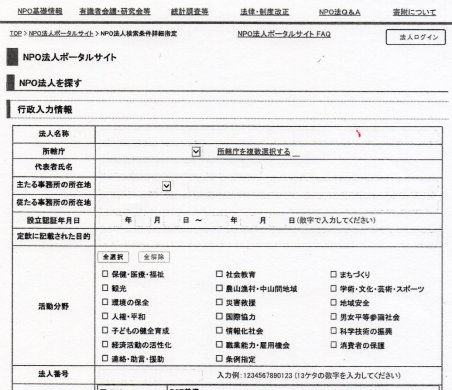
図6－1 全国特定非営利活動法人検索シート
「所轄庁」をクリックすると、全 国 4 8 都道府県の一覧表が出ますので、その中から任意の「都道府県名」を指示します。「活動分野」 に 2 0 項目のカテゴリーがありますので、この中から関心があるカテゴリーにチェックを付けます。票の下部にある「検索」をクリックすると、件数と法人名が一覧表として表示されます。例えば、
① 東京都 保健・医療・福祉： 5.22 2 件
社会教 育: 5.77 2 件
情報社会： 1.92 3 件
職業能力・雇用機会 ： 2.32 5 件
：
② 北海道 保険・医療・福祉： 73 9 件
社会教育： 63 5 件
情報化社会： 7 3 件
所業能力・雇用機会 ： 24 9 件
：
③ 熊本 保険・医療・福祉： 48 5 件
社会教育： 21 4 件
情報化社会： 4 6 件
職業能力・雇用機会 ： 12 5 件
：
関心を持った法人の詳細が知りたければ、表示されている法人名の上でクリックしますと、当該法人の詳細が表示されます。
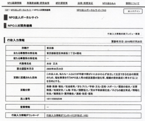
図6－2 法人の詳細説明表表示
201 7年4 月現在、全国に認 定 NP O 法人 が 51.50 8 件もあります。東京都だけで 、 10.38 4 件も登録されています。これら膨大 な NP O を一件ずつ探すのは大変です。内閣府のホームページから探すのが楽です。拙著 の Kindl e 本 「 6 0 歳定年後の生き方」ではもう少し詳しく書いていますので、関心があれば参照して下さい。
「在宅勤務」もありますが、あまり普及していません。技術部で図面を制作していた人が、退職後在籍していた企業の技術部から委託業務として自宅 で CA D 図面を作成し、ネットで送信受信、重要な事項の打ち合わせが必要な場合は、在籍していた企業の発注先の技術部門を訪問し打ち合わせをしています。各種企画書などの作成、専門的なスキルを駆使して作成しなければならない各種計画書や企画書なども、在宅で出来ます。
外部業者を使う前に、退職した有能なＯＢを活用します。人間性や技能も十分分かっているので、安心して委託できます。現役社員達でも「複業」として活用出来るでしょう。持ち帰って仕事を続けるのではサービス残業と同じです。、日常業務と切り離し、一つの仕事を委託する発想が必要です。副業ではなく「複業」なのです。有能な人材が介護で休職や退職せざるを得ない現状において、在宅で仕事が出来る体制整備をする必要があるでしょう。
「クラウドソーシング」もあります。これで生活しようとすると大変です。日本では、一つの働き方として普及するか否かは、これからです。
「起業」があります。起業するのに年齢は関係ありません。起業するのは簡単ですが、継続するのが大変です。昔は「石の上にも３年」と言われましたが、資本金や運営資金を食いつぶし倒産というケースが多い。私自身、僅かな資金を基 に 3 4 歳で起業し、目標とする先達や業者もいない、ソフト面の教育・研修もない、教えを乞う先達や業者もいない、参考書もない中で、独立独歩の ｛ Think & D o｝ [Do & Think ] を重ねなが ら 3 5 年間悪戦苦闘し敗退した苦い経験を持っています。
「一将功成って万骨枯れる」の諺が思い起こされるのも、起業を志した人々に言えます。初心がかなえられ成功する人達は、ほんのわずかです。売れる能力・技能を持ち、パイオニアスピリットを持つ人なら、会社人間で人生を送るより、自分の可能性に懸けて人生に挑戦していくのも、一つの生き方です。
第６章
人材を無駄使い
していないか
人材の無駄使いをしていないか
201 6 年度 、 201 7 年度に新卒求人倍率を見ますと 、 1. 4 倍を超えています。その反面、正社員率は低下し，非正社員率が相変わらず高い 。 1 5 歳か ら 3 4 歳以下の若者達が正社員になれず、止むを得ず派遣社員やアルバイト、非正規労働者として働いています。その数 は 30 0 万人と も 50 0 万人とも言われています。
また、経済開発協力機構 の 201 7年5月 2 9 日発表によりますと、日本のニート率 は 10. 1 ％ （ 201 5 年時点） 。 OEC D 平 均 14. 7 ％を下回っている。この調査から中年のニート 約 12 0 万人が外されている。、中年のニートは増加傾向にあると発表しています。
教育も受けそれなりの資質を持っている若者達が、劣悪の環境で働かざるを得ないのが、我国の現状です。新卒で就職した者達も 、 4 0 歳代半ばを過ぎて管理職になれない者達は、社内の出世競争脱落者として整理の対象になっています。有能な人材候補として採用した者達が、たかが社内の管理職になれないというだけで 、 4 0 歳代 ・ 5 0 歳代の人材を破棄している 。 4 0 歳か ら 5 0 歳代は、ビジネス世界のみならず社会人としても、最も脂が乗ったキーパーソンとして活躍出来る世代です。
正社員と非正規社員の労働環境・処遇の格差は酷すぎます。正社員な ら 6 0 歳定年後、高齢者雇用安定法で年金が受給できるまで継続雇用で保護していますが、正社員と同じ職場、同じ労働をしている非正規社員は、その恩恵を受けられません。我国は世界先進諸国の中でも少子高齢化社会が急速に進んでおり、それに伴い人口減少が起こっております。当然ながら労働人口も減少していきます。労働人口の解決策として、産業界を中心に移民の大量に受け入れの声が高まっています。
外国人技術研修制度の名のもと、少なからぬ人数の外国人研修生が日本に来ていますが、劣悪の労働環境と日本人からは相手にされない低賃金で働かせています。海外からは、外国人技術研修制度は「奴隷制度」だと批判されています。単純作業しか出来ない移民を大量に入れると、欧米の移民国家のようになってしまいます。海外の有能な人材を積極的に採用すのは好ましい事です。
労努力不足という理由で安易に移民を入れる前に、我国の人材活用状況を見つめ直してみる必要があります。現在の我国の産業界は、余りにも贅沢な人の使い方をしています 。 1 5 歳 ～ 3 4 歳までの有能な人材達を多数切り捨て 、 4 0 歳か ら 5 4 歳までに管理職になれない人達は、邪魔者扱いになっている。新卒で入社した者達 の 2 0 ％が入社３年以内に退職しています。
非正規社員の中にも有能な人材がいる
現在、有能な40歳・50歳代の人材が余っているとよく言われます。余っている、あるいは、社員の構成が三角形でなく40歳・50歳世代の部分が膨らんだ紡錘型になっている。この部分を削らなければならない。企業経営の諸悪の原因が、この40歳代・50歳代の存在にあるかのような言い方をしています。
4 0 歳 ・ 5 0 歳代の社員が多いとっても、自然に湧いてきたのではありません。経営者の採用計画に最大の原因があります。東芝やシャープをはじめめとする大手企業の経営者が経営判断のミスにより、事業部の閉鎖・売却・分社化など行い、それに伴って惜しげもなく有能な社員をリストラしています。この中に は 4 0 歳 ・ 5 0 歳代の組織の中核になるべき人材が多々います。当該組織内でのみ通用するガラパゴス型技能であっても、彼等の有能な技能が素晴らしい製品開発、製品化や企業経営に貢献しているのです。彼等が持つ各種技能を後輩社員達に伝承することなく、捨てているのが本当にもったいない。
201 4 年の労働者派遣法改正案について、安倍信三首相は「法改正によって派遣で働く人数を増やすべきだとは考えていない」と言っていましたが 、 201 3 年まで連続して減少していた派遣労働者の数が、今回の改正法案の成立後、増加傾向に転じています。労働者派遣改正法は 、 201 5年4 月に施行されました。現在の派遣制度では、通訳や秘書など期間の制限がない「専 門 2 6 業務」を除き、業務ごとに原則１年。最 長3 年間という受け入れを設けています。
改正法では、こうした業務内容や業務ごとで派遣期間を区別することを止め、すべての業務について派遣期間の上限を派遣労働者１人当たり３年にするとしています。受け入れ企業にしてみると、労働組合と話し合い 、3 年毎に派遣社員を入れかえれば、同じ仕事を継続的に任せられることになりますので、非常に分かり易くなります。企業が派遣社員の利用を控えていたのは、旧制度の曖昧さがりました。改正法では、派遣会社に期間制限に達した労働者の保護を図るため、派遣会社での無期雇用化、または、新たな派遣先の提供が義務付けられました。当初、雇用安定措置の一つとして、派遣先への直接雇用の申し入れも含まれていましたが、法案となる段階で削除されました。これにより、受け入れ企業は「労働契約申し込みなし制度」が導入され、顧客だったはずの派遣先企業が「雇用主」に転じる恐れが無くなりました。派遣会社が労働者を無期限雇用していれば、期間制限なしに同じ人を活用出来ます。
派遣会社にとっては、従来のフロー型からストック型へと抜本的転換になるため、無期限雇用労働者になる対象者は、登録者 の 1 0 ％もいない。派遣契約が終了すれば、派遣会社と派遣労働者間との雇用契約も終了します。今後 、3 年間継続雇用が見込まれる業務の紹介を派遣会社派ためらうかもしれないといわれます。なぜならば、非正規社員の雇用の安定を目的 に 201 3年4 月に施行された「改正労働法」で、通 算5 年派遣の有期雇用契約を繰り返すと、無期雇用に転換できるようになったことがあります。
派遣でも雇用契約が継続したまま次の就業先が提供され、派遣会社との雇用契約 が5 年を超えれば、こうした権利が派生します。それを回避するために、 「2 年の派遣 を2 回行い、以後 の1 年の派遣の際に不更新の合意を採っておくとよい」と人事労務の専門家からのアドバイスがなされています。この改正労働法に基づく無期契約への転換は 、 12 7 万人の派遣労働者を含む 約 20 0 万人のパートタイマーや契約社員などの「有期雇用者全体にかかわる問題」です。現実は、派遣のケースと同じように、有期雇用契約の更新の上限 を5 年とされる懸念が大きいといわれます。
採用企業の人事関係者間では、「通 算5 年には産休・育児休暇も含まれる。直前に権利行使がなされるリスクを防止するため 、3 年間をめどに雇止めにしておいた方が無難」と囁かれています。採用企業は直接雇用のリスクを避けるため、正社員の長時間労働が一般化している一部のサービス業を除く、有機雇用で雇止めが出来る「選択権」を手放したがらない。そのため、長年真剣に勤め有能な人材になった人でも切り捨てて平気です。大手企業 で 201 5 年に大幅なベースアップとボーナスが支給され 、 201 6 年もベースアップとボーナスが支給されましたが、正社員より優秀な成果と技能を発揮した非正規社員の賃金アップは極めて限定的でした。
今日、全就業者に占める非正規社員の比率は既 に 4 0 ％に迫っています。人口減少が進む中、人材価値が有る有能な人達を低賃金・不安定な労働環境で使い捨てしてよいのであろうか。人材不足・労働者不足と産業界は騒いでいますが、足元にいる有能な人材を見捨てています。人材価値が有ると評価した非正規社
を正規社員へ登用し、安心して働ける処遇と環境を与えれば、くだらない安易な移民受け入れなど不要です。人材不足の産業界にとっては低賃金で働かせられる労働者が欲しいはずです。外国人技能研修制度ときれいごとを言って受け入れた者達が逃げ出し、不法滞在者になって社会問題にっているのを見ても分かるように、正規社員と非正規社員の身分格差・処遇格差が大きいのが我国の現状です。
正規社員と非正規社員という「身分で区別する固定的観念・差別的観念」に拘っていては、有能な人材を活用することが出来ません。止むを得ず非正規社員で働いている有能な技能とスキルを持っている人材も、正社員以上努力しても正当に報われない状態が続けば、やる気をなくし凡人になってしまいます。非社員を採用する企業の中には人物を正当に評価し、正社員として登用ししている企業もあります。正社員に登用された人物の多くが、業務に励み・自己研さんをし成果を発揮しています。
外国人社員から見た日本企業の体質
外国人社員が入社したら、何処の企業もオリエンテーションをし、日本社会のシステムや人事制度を理解してもらおうとします。つまり、日本的習慣を理解してもらおうとします。日本まで来て仕事をしようとする外国人は、何か大きな仕事を成し遂げようと考えています。そのような彼等に対し、1年経っても命令通りに動かそうとすると「私は大きな仕事をするために入社したのであって、日本人になるためにこの会社に来たのではない」とやる気を失ってしまう。
「会社は、プロジェクトに応じた集まりであって、長く居る気はない」20代のアジアのホワイトカラーの平均勤続年数は、3年～5年です。そのの様な彼等に、何時役に立つか分からない研修を再三されたら不満を持ちます。日本企業と外国企業の時間軸が違います。日本の会社は、長期の時間軸に基づいて働きます。そのため、まず、会社の制度や仕事の進め方を身に付けることが先決。早く結果を出さなくともよい。スキルを身に付ける場は、後から幾らでも用意されているという感じです。この様な悠長な事を言っているから、40歳代になってもポータルスキルが身に付かないのです。40歳半ばになると役員候補や役員に昇進するか否かの最終選抜が行われます。ポータルスキルがない人物達はふるい落とされます。ポータブルスキルは自らが身に付けるものです。
米国では、トランプ大統領の掛け声もあって雇用が増えています。しかし、雇用の内実を見ると、黒人とヒスパニック系を中心としたパートタイマーなどの非正規雇用者です。我国でも、雇用の内実が大きく変化しています。職業別雇用内容を見ますと、
① 介護サービス(介護士)：30万人増。
② 保健医療（介護士）：20万人増。
③ 飲食物調理：14万人増。
④ 一般事務：26万人減。
⑤ 製品製造／加工処理：25万人減。
⑥ 機械組み立て：16万人減。
社会福祉や飲食業分野で雇用（パートやアルバイトの非正規労働者）が大幅に増加した半面、製造業分野を中心に雇用が減少しています。雇用が増えた職種は、賃金が平均より低い「非正規雇用」が多い。その他を総括してみますと、
① 雇用が増加した職種
清掃／機械整備・修理／生産関連・生産類似作業／製品検査／保安関連
② 雇用が減った職種
管理業務／接客業務・給仕業務／商品販売／販売類似業務／運搬
が見られます。
民間企業に限らず、公務員でも非正規職員が増加しています。現在、全国の自治体では人件費を抑えるため、公務員の非正規化が進められています。自治労（全日本自治団体労働組合）が2012年度に実施した調査によりますと、非正規職員の割合は、33.1％に上ります。総数は推計約70万人に上っています。任用の根拠法により、「任期付」(例:非常勤」などが有ります。いずれも雇用に有期があり、その多くが年収200万円以下です。
次世代育成、社会が一体になって子育てをしようとスローガンは立派ですが、教育現場を見ますと、教職員の多くに派遣業を通じて派遣させている派遣教員や非正規教員が多くいます。この現実を知ったとき愕然としました。教員自体の身分が不安定の上、給与が正規職員の半額から１／３では、落ち着いて真剣に子供の教育に専念しようとする気持ちが折れるのが理解出来ます。学校問題が多発している大きな要因に、教職員の雇用形態があると考えています。
なぜ自らを磨かないのか
日本企業の美徳であった「終身雇用制度・年功序列賃金制度」のもとでは、与えられた仕事を真面目に行っていれば評価され、在籍年数に応じて昇給・昇進し、無事定年を迎え年金を貰って悠々自適の人生が送れる保証がありました。ぬるま湯的職場環境に反発しキャリアとして活躍したい人達は、自己研鑽をし組織の内外で素晴らしい仕事をして来ました。
我国独特の企業形態では、先進諸国の経営形態に対抗できなくなり、終身雇用・年功序列賃金制度は衰退しています。「米国では直ぐ社員をレイオフする」と揶揄していましたが、現在は我国においても経営者の経営ミスで業績が悪化すると、まず、社員のリストラから着手するのが一般化して来ました。会社は社員一同が額と体に汗を流し運営しているものであって、投資ファンドや株主の利益のために働いているのではありません。短期間で収益を上げファンドや株主に利益を献上し続けなければ、社長でさえリストラ（追放）されるのが現状になって来ております。
中長期計画は必要ですが、少なくとも3年から5年の短期に利益を上げ、ファンドや株主に満足を与えなければ経営者は無能の烙印を押されます。社員達も終身雇用に守られた長期的人生設計を描き、「休まず、遅刻せず、働かず」の勤務姿勢では、リストラされても仕方がありません。終身雇用・年功序列が消滅したと言われる我国の組織ですが、まだまだその残滓が残っています。日本企業に入社した外国人社員達が不満を覚え、失望して辞めていく大きな要因に、「3～5年の短期的の仕事評価と処遇」が日本企業に欠けている点が挙げられています。
我国のサラリーマンにも、「5年スパンで現状の自分見直し」と「次の5年間のスキル積み上げ」が問われます。特に30歳～34歳／35歳～39歳／40歳～44歳の期間のスキルアップが重要なのです。この間に蓄積したスキルが社外でも評価される人は、果敢に社外へ挑戦していきます。平々凡々とこの重要な時期を過ごした人は、その後の人生に苦労します。
人手不足が言われていますが、日本には有能な人手が多々います。ただ無駄使いが多すぎるのです。非正規社員偏重の人事政策では、産業界の人手不足は解消しません。
あとがき
終身雇用制度など、日本企業が作り上げた素晴らしい雇用制度が失われてきた現在、正社員で入社した人達でも安心して定年まで当該企業で働ける保証はありません。新卒で入社した者も「入社してみたら期待した企業ではなかった」「何時まで経っても望んでいたような仕事をさせてもらえない」などの理由で、入社後3年以内に退職する者達が30％以上います。
若手社員が簡単に退職してしまわないように気配りをする反面、、40歳代～50歳代の対処に悩んでいます。日本企業では、正社員を一方的に解雇することが出来ませんので（正規公務員は特に解雇することが難しい）、あの手この手を使って「自主退職」することが行われています。在籍年数のみ重ねるが、業務のレベル・深みが無い人、劣化してしまっている人がいます。最終選抜評価段階で、執行役員や役員候補者として残したいが枠が有り、役職定年をせざるを得ない人もいます。このボーダーライン上に有能な人材が多々いるでしょう。これ等有能な人材を55歳や60歳という歴年齢だけで切り捨てるのは、本当にもったいない。
「一億総活躍時代」「働く意欲のある人達が70歳まで働ける環境整備」との掛け声はありますが、現実は45歳が会社人間の分水嶺になっています。自国の労働人口が減少することが確実な我国において、従来発想のまま、有能な人材になるであろう若者達を切り捨て、当該企業で使い易いようにガラパゴス型で育てた50歳前後の人材は邪魔者扱いするやり方で、日本の企業活動を成長させることが出来るでしょうか。特に、40歳～50歳代は、人生80年代の我国においては、中核になる人材層です。
年齢相当の知識・知恵・スキルを持っている40歳～59歳世代の活用が今後ますます重要な社会テーマの一つになって来ます。中堅企業以上になると、シニア／ミドル／シルバー各世代の技能・スキルを生かした仕事が幾らでもあるはずです。本気になってこれら世代を有効活用したいと考える企業・組織では、「彼等を活用する仕組み作りと環境作り」が必要です。仕事を与えるのではなく、テーマを与えるか、企業の業務向上・業務効率化を目的とした彼等からの自主的企画の中から評価選別して自主的に取り組ませ、成果を挙げさせるやり化など様々な対応策が考えられます。彼等を生かすも殺すも「人事政策とトップの決断」次第です。
参考資料
・60歳定年後の生き方（Kindle本）： 中沢俊一著
・日経電子「キャリア資格が国家資格に」 ： 2017.02.21
・日経電子「転 職7 年ぶり に 30 0 万人」 ： 2017.03.01
・日経電子 「 5 0 歳前半盛り上げよう」 ： 2017.03.16
・日経出世ナビ「転職してはいけない人」 ： 2017.04.08
・日経ビジネス「中途採用の実態調査」 ： 2017.04.28
・日経出世ナビ「シャープ元社員 」 2017.04.28
・日経電子「エグゼクティブ転職」 ： 2017.05.26
・週刊ダイヤモンド「逃げ切り世代」 ： 2016.02.20
・週刊ダイヤモンド 「 8 0 歳総勤労時代」 ： 2013.05.11
・週刊東洋経済「起業と天才」 ： 2014.11.29
・ THE2 1 「総力特集」 ： 2015.0 4 号
中沢俊一経歴
193 5 年 中國生まれ
194 5 年 北京東条第一国民学 校3 年１学期で敗戦
194 6 年 日本へ引き揚げ
195 5 年 熊本県立人吉高校卒業
195 9 年 法政大学経済学部卒業
196 9 年 日本マイクロフイルミング（株）設立
198 6 年 日本イメージインフォーメーションへ改称
トータルドキュメントマネジメント
システム専門会社を目指して努力
199 8 年 閉鎖
・日刊工業新聞、日経流通新聞記事執筆
・日立製作所／リコー主催セミナー講師
・各企業社内研修講師、各セミナー企業主催講師
・各誌へ記事執筆、
代表的出版図書
・マイクロフイルミング「文書編」 産業能率大学出版部
・文書・データ管理の実務 日刊工業新聞社
・ニューファイリング 中央経済社
・ニューオフイス／ニューファイリング 日刊工業新聞社
・電子ファイリングの実際 有斐閣ビジネス
・文書・データ管理の実務 中央経済社
・電子ファイリング 電波新聞社
Kindl e 本
・情報が盗まれていませんか ・セキュリティ対応の文書情報管理
・ミドル世代が活躍する時代 ・文書情報管理入門
・女性の活用と活躍時代 ・ミドル世代が活躍する時代
・定年は第一の人生の始まり ・ 6 0 歳定年後の生き方
・セキュリティ対応のドキュメントマネジメント
・電子文書化と文書情報管理
東京都福生市在住
Ｅ―メール shun-nakazawa123@nifty.c